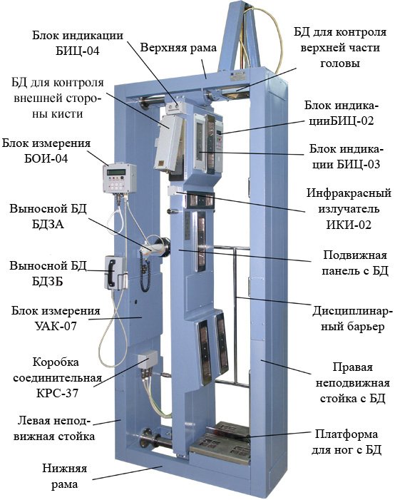
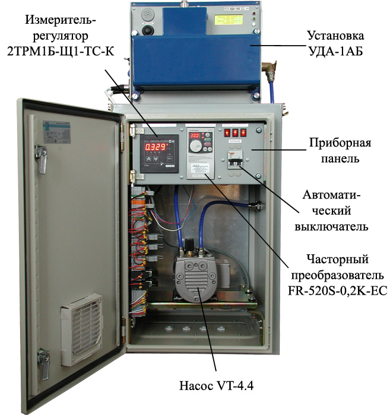
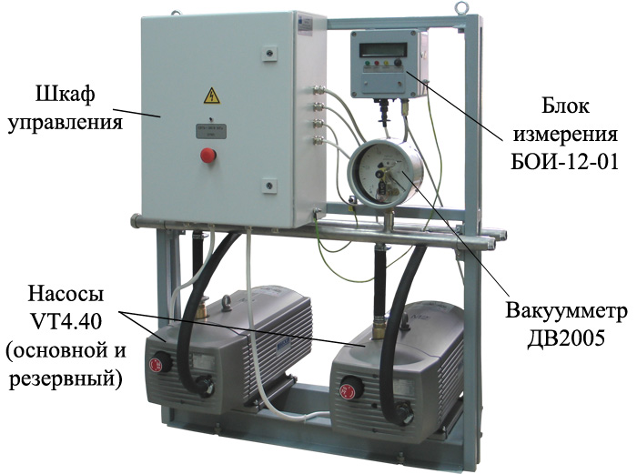

1993FEBRUAR
Neue Organisationsform
Das Unternehmen wurde als Gesellschaft mit beschränkter Haftung «Позитрон ГМБХ» neu registriert.
Entwicklung, Herstellung, Lieferung und Service von Geräten zur Strahlungskontrolle und Strahlungsüberwachung für Wissenschaft, Produktion und Umwelt 1991-2026
Schowti Wody, Ukraine
Vom einzelnen Detektionsmodul
bis zum Strahlungsüberwachungssystem.

Vielen Dank für Ihr Interesse an den Produkten unseres Unternehmens.
Die Strahlungsüberwachung erfordert genaue Messungen, zuverlässige Geräte und sorgfältige Berücksichtigung der Einsatzbedingungen. Deshalb ist es uns wichtig, Ihre Aufgabe zu verstehen: Was soll überwacht werden, wo wird das Gerät eingesetzt und wie soll es mit anderen Systemen zusammenarbeiten?
«Позитрон ГМБХ» vereint Erfahrung in Entwicklung, Fertigung und Service von Strahlungsüberwachungsgeräten. Wir unterstützen unsere Kunden bei der Auswahl geeigneter Lösungen und pflegen eine konstruktive Zusammenarbeit in allen Projektphasen — von der Abstimmung technischer Anforderungen bis zum Betrieb der Geräte.
Ich lade Sie ein, unseren Katalog kennenzulernen und sich an die Fachleute unseres Unternehmens zu wenden. Gerne besprechen wir Ihre Aufgaben und Möglichkeiten der Zusammenarbeit.
Mit freundlichen Grüßen
Oleg Nikolajewitsch Braschij
Branchenübersicht: Energie, Technologien und Strahlungsüberwachung. Quellen geprüft am 11.10.2026; verlinkte Statistiken werden von den Herausgebern aktualisiert.
Die Atomindustrie umfasst Stromerzeugung, Forschung, Gerätebau, Anlagenservice und radioaktive Abfälle. Leistungs- und Forschungsreaktoren erfüllen unterschiedliche Aufgaben; ihre Zahlen sind getrennt zu betrachten.
Für Ländervergleiche zählen installierte Leistung, tatsächliche Erzeugung, Anlagenalter und Lebenszyklus ebenso wie die Blockzahl. IAEA PRIS unterscheidet betriebene, im Bau befindliche und endgültig stillgelegte Leistungsreaktoren.
Überwachung umfasst Dosis- und Kontaminationsmessungen an Arbeitsplätzen, Personen, Fahrzeugen und Fracht sowie Umweltkontrolle, Instandhaltung und Rückbau. Messgröße, Bereich, Einsatzbedingungen und Kundenanforderungen bestimmen die Geräteauswahl.
Energoatoms Anlagenpark umfasst Saporischschja, Riwne, Südukrainische und Chmelnyzkyj. Der Betreiber nennt 15 Blöcke: dreizehn WWER-1000 und zwei WWER-440 mit 13.835 MW installierter Leistung. Das beschreibt den Anlagenpark, nicht die gleichzeitig erzeugenden Blöcke.
Zur Branche gehören Reparatur-, Konstruktions- und technische Einrichtungen, Lagerung abgebrannter Brennelemente und Abfallmanagement. Strahlungsüberwachung, Metrologie und Geräteservice unterstützen diese Aufgaben.
Den tatsächlichen Anlagenzustand, insbesondere in Saporischschja, anhand aktueller Betreiber- und IAEA-Mitteilungen prüfen. Investitionsprogramm, Standortvorbereitung und Reaktorbau sind unterschiedliche Phasen; ein angekündigtes Projekt ist keine in Betrieb genommene Leistung.
| Typ / Familie | Grundprinzip |
|---|---|
| PWR / WWER | Druckwasser überträgt Wärme über einen Dampferzeuger auf den Dampfkreislauf. |
| BWR | Wasser siedet im Reaktor; Dampf strömt zur Turbine. |
| PHWR / CANDU | Schwerwasser als Moderator; meist Druckröhrenbauweise. |
| Gasgekühlt / HTGR | Gasförmiges Kühlmittel; Hochtemperaturkonzepte auch für Prozesswärme. |
| Schnelle Reaktoren | Schnelle Neutronen; unterschiedliche Kühlmittelkonzepte. |
| SMR | Kleine modulare Reaktoren: Größen- und Modularitätskonzept, kein einheitlicher physikalischer Reaktortyp. |
Abläufe und Termine hängen vom Land und Projekt ab. Vorarbeiten entsprechen nicht automatisch dem PRIS-Status «im Bau». SMR garantieren weder geringere Kosten noch kürzere Bauzeiten. Aktuelle Baustandorte stehen im offiziellen Register.
Auswertung öffentlicher Quellen zum 11.10.2026. Ein analytischer Überblick, kein vollständiges Anlageninventar. Hersteller, vertraglicher Lieferant, Integrator und Betreiber können unterschiedliche Organisationen sein. Bestätigter Einsatz wird von Katalogangaben getrennt.
| Bereich | Messungen und Funktionen |
|---|---|
| Gelände und Gebäude | Stationäre Gamma-Messstellen erfassen Dosisleistung, Warnungen und Zeitreihen. Wetterdaten unterstützen die Bewertung des Schadstofftransports. Gamma-Hintergrund allein bestimmt weder Alpha-/Beta-Kontamination noch Nuklidzusammensetzung. [15] [17] |
| Luft und Ableitungen | Getrennte Kanäle überwachen Aerosole, radioaktive Gase, Iod und Flüssigkeiten. Probenahme, Luftdurchsatz und Messverfahren bestimmen das Ergebnis; Dosisleistung ersetzt keine Aktivität in Bq/m³. [15] [12] |
| Personal und Oberflächen | Personendosimeter erfassen die Exposition; Alpha-/Beta-Radiometer prüfen Haut und Arbeitskleidung. Dies sind unterschiedliche Messaufgaben. [16] [10] |
| Labore und mobile Erkundung | Probenspektrometrie bestimmt die Nuklidzusammensetzung; tragbare und fahrzeuggestützte Systeme erkunden das Gelände. Eine Dosisleistungskarte ist nicht automatisch eine Karte der Oberflächenkontamination. [15] |
| Standort | Öffentliche Angaben | Modell / Lieferant |
|---|---|---|
| Kernkraftwerk Riwne | Der Betreiber nennt die Inbetriebnahme eines automatisierten Strahlungsüberwachungssystems im Jahr 2004. | Modelle und Lieferant sind in der geprüften Veröffentlichung nicht genannt. [5] |
| Kernkraftwerk Chmelnyzkyj | Die Meldung vom 05.02.2025 beschreibt modernisierte Geländeüberwachung sowie Pläne für Turbinenhalle, Spezialgasreinigung und Personendosimetrie. | Modelle und Lieferanten fehlen; der Plan für 2025 belegt keinen vollständigen Abschluss. [2] |
| Kernkraftwerk Südukraine | Bei einer Übung im August 2026 wurde ein mobiles radiometrisches Labor mit Strahlungsüberwachung und Wetterstation eingesetzt. | Laborbetreiber: Notfalltechnisches Zentrum von Energoatom; Modelle und Hersteller nicht genannt. [3] |
| Kernkraftwerk Saporischschja | Energoatom veröffentlicht datierte Berichte zum Strahlungshintergrund. | Sie belegen weder das vollständige aktuelle Inventar noch die Lieferanten. [6] |
| Kernkraftwerk Tschornobyl — Stilllegung | Im September 2025 erhielt das Personendosimetrie-Labor ein modulares OSL-System zur Messung externer Exposition. | Hersteller: Mirion Technologies; Modell und vertraglicher Lieferant fehlen. [4] |
| Typ / Modell | Funktionen | Hersteller / Belegstatus |
|---|---|---|
| АМП-12 «Пульс-1А» | Mehrkanalerfassung von Impuls- und Analogsignalen; bis zu 60 Impulskanäle, 0,01–6×10⁴ s⁻¹. Aufbau automatisierter Systeme und Modernisierung von АКРБ-03/06/08. | Позитрон ГМБХ. Laut Katalog für normalen Betrieb; kein konkreter Anlagenstandort hier belegt. [7] |
| БДМГ-04 / МКС-2001 | Stationäre Gamma-Dosisleistungsmessung; МКС-2001 mit austauschbaren Detektionsblöcken. Bereich und Messgröße hängen von der Ausführung ab. | Позитрон ГМБХ. Herstellerkatalog belegt; Lieferkonfiguration gesondert prüfen. [8] [9] |
| РЗБА-04-04М | Alpha-/Beta-Kontamination von Haut und Kleidung mit Schwellenalarm; Ausführung 40 erfasst 18 Bereiche über Beta-Kanäle. | Позитрон ГМБХ. Zweck und Ausführungen durch Katalog belegt. [10] |
| ПК АСКРО; УДАБ-01, УДЖГ-01/14РМ1/03; РПН-01, РПС-01/02, РАС-02/03, РГС-01; СВТ-01М; ДКГ-01, ДКН-01 | Messstellen, Detektionsgeräte, Radiometer, Messstände für Aktivität von Abluftableitungen und Dosimeter. | Atomenergomash, Energoatom-Niederlassung. Offizielles Sortiment; genaue Spezifikationen und Anlagenzuordnung fehlen. [1] |
| RAMSYS: GIM 206K; BIM 201K; NIM 201K | Gamma-Dosisleistung unter Unfallbedingungen; Beta-Aktivität gasförmiger Ableitungen; Neutronen-Äquivalentdosisleistung. | Mirion Technologies. Internationaler Katalog; Einbau dieser Modelle in ukrainischen Kernkraftwerken durch diese Auswertung nicht bestätigt. [11] [12] [13] |
| RadMonitor / БДБГ-09 | Kontinuierliche automatische Gamma-Hintergrundüberwachung, Anzeigen und Software. | ECOTEST. Kataloglösung; Lieferung an ein bestimmtes ukrainisches Kernkraftwerk hier nicht bestätigt. [14] |
PROZORRO · OPEN DATA
Prozorro-Beschaffungen suchen und Metadaten mit unserem Katalog vergleichen. Ausschreibungstexte bleiben auf Ukrainisch.
38341200-9 — Dosimeter; 38341000-7: Strahlungsmessgeräte; 50411000-9: Reparatur von Messgeräten; 50433000-9: Kalibrierung. Dienstleistungscodes mit Strahlungssuchbegriffen kombinieren.
Gruppe wählen und suchen. Leere Suchbegriffe verwenden die vorgegebene Liste; eigene Anfragen (höchstens acht, mit Semikolon getrennt) ersetzen sie. Branchen füllen eine bearbeitbare Liste von Auftraggebernamen, keine amtliche Branchenklassifikation. Verifizierte EDRPOU-Kennungen ermöglichen eine genaue Auswahl. Zunächst ohne CPV-Einschränkung suchen: Auftraggeber verwenden unterschiedliche Codes. Spektrometer und Radiometer können optische Geräte sein; Strahlungsart in den Unterlagen prüfen.
Umfang: geladene Suchseiten; das Gesamtregister wurde nicht geprüft.
Quelle: offizielle offene Prozorro-Daten · API ↗
Dokumente sind in der Karte verfügbar. PDF/DOCX und Scans per Schaltfläche lesen; OCR und technische Eignung fachlich prüfen.
Radiometer, Dosimeter, Detektionsmodule und ergänzende Systeme. Verwendungszweck und Ausführungsvarianten finden Sie in den Produktkarten.
Die technischen Daten stammen aus dem Katalog 2024–2025. Ausführung, Lieferumfang und aktuelle Parameter werden bei der Bestellung abgestimmt.
Die Texte der früheren Website wurden ungekürzt übernommen. Daten, technische Angaben, Zertifikate, Namen und Unternehmensangaben entsprechen der Originalquelle; Informationen für 2026 sind beim Unternehmen zu erfragen.

Die Produkte der Gesellschaft «Позитрон ГМБХ» erfüllen die Anforderungen der technischen Verordnung für gesetzlich geregelte Messgeräte. Dies bestätigt die vom Nationalen Wissenschaftszentrum «Institut für Metrologie» ausgestellte Baumusterprüfbescheinigung.

Radiometer
РЗБА-04-04М

Dosimeter-Radiometer
МКС-2001

Pumpeneinheit
БН-01

Analysator
АМП-12 «Пульс-1А»

Detektionsmodule
БДМГ-04

Radiometer
РКС-02 «Кордон»

Melder
СУРБ-01

Melder
СГИ-01

Radiometer
РУГ-2001
Quelle: positron.dp.ua ↗

Kurzbeschreibung:
Der Oberflächenkontaminationsmonitor für alpha- und betaaktive Stoffe РЗБА-04-04М (im Folgenden: Radiometer) dient zur Messung der Kontamination von Oberflächen (Haut oder Schutzkleidung des Personals) durch beta- und alphaaktive Stoffe anhand der Flussdichte der Alpha- und Betateilchen, die auf die Eintrittsfenster der Detektionsmodule treffen, sowie zur Signalisierung der Überschreitung oder Nichtüberschreitung festgelegter Schwellenwerte.

Die besondere Anordnung der stationären Detektionsmodule БДЗБ am Gehäuse des Radiometers ermöglicht die gleichzeitige Messung der Kontamination der Kleidung oder Haut eines Menschen durch betaaktive Stoffe an 18 Bereichen. Alle übrigen Bereiche werden mit dem externen Detektionsmodul БДЗБ zur Messung der Kontamination durch betaaktive Stoffe und dem externen Detektionsmodul БДЗА zur Messung der Kontamination durch alphaaktive Stoffe geprüft.
Das Radiometer РЗБА-04-04М gehört zu den Messgeräten mit Schwellenwertüberwachung, bei denen akustische und optische Alarme bei Überschreitung des festgelegten Kontaminationsschwellenwerts für beta- und alphaaktive Stoffe ausgelöst werden.
Das Radiometer РЗБА-04-04М gibt das Signal «SAUBER» aus und entriegelt die Ausgangssperre, wenn auf keinem der stationären Kanäle der festgelegte Schwellenwert der Kontamination durch betaaktive Stoffe überschritten wurde.
Das Radiometer РЗБА-04-04М gibt das Signal «KONTAMINIERT» aus, wenn der festgelegte Schwellenwert der Kontamination durch betaaktive Stoffe auf mindestens einem stationären Kanal überschritten wurde.
Das Radiometer РЗБА-04-04М kann über die Schnittstelle RS485 oder, auf gesonderte Bestellung, RS232 an ein lokales Netzwerk (LAN) angeschlossen werden.
Die Detektionsmodule БДЗБ und БДЗА wandeln den Fluss von Beta- beziehungsweise Alphateilchen in eine statistisch verteilte Folge von Spannungsimpulsen um, deren Frequenz von der Teilchenflussdichte abhängt.
Die Messeinheiten УАК-07 und БОИ-04 analysieren und verarbeiten mathematisch die elektrischen Impulse aus den Detektionsmodulen, geben mithilfe der Anzeigen «KONTROLLE», «SAUBER» und «KONTAMINIERT» Signale über die Überschreitung oder Nichtüberschreitung des festgelegten Schwellenwerts aus und zeigen die numerischen Messergebnisse an.

Der Oberflächenkontaminationsmonitor für alpha- und betaaktive Stoffe РЗБА-04-04М hat die staatlichen Abnahmeprüfungen zur Bewertung der Konformität mit der technischen Verordnung für gesetzlich geregelte Messgeräte bestanden, die durch Beschluss des Ministerkabinetts der Ukraine №94 vom 13.01.2016 genehmigt wurde. Er besitzt die Baumusterprüfbescheinigung № UA.TR.113-0064/04-17, Version 2 vom 26.10.21.
| Technische Daten | Werte |
|---|---|
| Messbereich des Radiometers für die Betateilchenflussdichte von einer Oberfläche, min-1∙cm-2; im Betateilchen-Energiebereich, MeV |
von 0,5 bis 1500 von 0,15 bis 2,5 |
| Grenzen des zulässigen relativen Grundfehlers bei der Messung der Betateilchenflussdichte mit einer Vertrauenswahrscheinlichkeit von 0,95, höchstens, % | ± 30 |
| Messbereich des Radiometers für die Alphateilchenflussdichte von einer Oberfläche, min-1∙cm-2; im Alphateilchen-Energiebereich, MeV |
von 0,1 bis 10000 von 4,13 bis 5,6 |
| Grenzen des zulässigen relativen Grundfehlers bei der Messung der Alphateilchenflussdichte von einer Oberfläche mit einer Vertrauenswahrscheinlichkeit von 0,95, höchstens, % | ± 30 |
| Empfindlichkeit der Detektionsmodule БДЗБ für Betastrahlung aus Arbeitsnormalquellen des Typs СО mit den Radionukliden 90Sr+90Y, mindestens, (Imp/s)/(min-1∙cm-2): - für die Kanäle №1,13, 16-19; - für die Kanäle №14 und №15 |
0.5 0.3 |
| Empfindlichkeit des Detektionsmoduls БДЗА für Alphastrahlung aus Arbeitsnormalquellen des Typs П9 mit dem Radionuklid 239Pu, mindestens, (Imp/s)/(min-1∙cm-2) | 0,2 |
| Empfindlichkeit des Detektionsmoduls БДЗА für Alphastrahlung aus Arbeitsnormalquellen des Typs У8 mit dem Radionuklid 238U, mindestens, (Imp/s)/(min-1∙cm-2) | 0,08 |
| Empfindlichkeit des Detektionsmoduls БДЗА für Alphastrahlung aus Arbeitsnormalquellen des Typs У4 mit dem Radionuklid 234U, mindestens, (Imp/s)/(min-1∙cm-2) | 0,04 |
| Alarmschwellen werden für jeden Messkanal individuell eingestellt, min-1∙cm-2: - für das Detektionsmodul БДЗА im Bereich - für die Detektionsmodule БДЗБ im Bereich |
von 0,1 bis 9999 von 5 bis 9999 |
| Schrittweite der Schwellenwerteinstellung, min-1∙cm-2: - bei Schwellenwerten unter 5 min-1∙cm-2 - bei Schwellenwerten über 5 min-1∙cm-2 |
0,1 1 |
| Dauerbetriebszeit, Stunden pro Tag | Unbegrenzt |
| Zeit bis zum Erreichen der Betriebsbereitschaft, höchstens, min | 2 |
| Anzeigeinstabilität des Radiometers während 24 h Dauerbetrieb, höchstens, % | 5 |
| Leistungsaufnahme einschließlich der an den Analysator angeschlossenen Detektionsmodule und -geräte, höchstens, VA | 150 |
| Mittlere Betriebsdauer zwischen Ausfällen des Radiometers, mindestens, Stunden | 10000 |
| Mittlere Lebensdauer des Radiometers, mindestens, Jahre | 10 |
Der Oberflächenkontaminationsmonitor für alpha- und betaaktive Stoffe РЗБА-04-04М wird in verschiedenen Ausführungen hergestellt. Je nach Ausführung kann das Radiometer verfügen über:
• unterschiedliche Kanalzahlen und entsprechend unterschiedliche Gesamtflächen der Detektionsmodule; • zusätzliche externe Detektionsmodule zur Messung der Oberflächenkontamination durch alpha- und betaaktive Nuklide, angeschlossen an eine autonome Messeinheit; • stationäre Detektionsmodule zur Kontrolle der Handrücken; • ein bewegliches Detektionsmodul zur Messung der Kontamination des Scheitelbereichs; • einen integrierten Industriecomputer; • eine oder zwei Zugangssperren für den Personendurchgang.
Es handelt sich um eine Säule mit 18 stationären Detektionsmodulen (im Folgenden: БД) БДЗБ und einer Messeinheit УАК-07 (im Anlagengehäuse). Die Grundausführung ist mit einer Anzeigeeinheit БИЦ-03ausgestattet, auf der eine menschliche Figur als Mimikdiagramm zur Kennzeichnung der kontaminierten Bereiche für jeden der 18 stationären Kanäle dargestellt ist. Ausführung 20 besitzt eine Anzeige- und Tastatureinheit БИЦ-02 zur Anzeige der numerischen Messergebnisse für jeden der 18 stationären Kanäle und zur Einstellung des Radiometers. Die Grundausführung ist mit einem Detektionsmodul zur Kontrolle des Scheitelbereichsauf einer beweglichen Achse ausgestattet. Die Position des Scheiteldetektionsmoduls wird an die Körpergröße angepasst. Außerdem sind stationäre Detektionsmodule zur Kontrolle der Handrücken vorhanden.
Die Grundausführung ist mit einem externen Detektionsmodul БДЗБ zur Kontrolle von «blinden Bereichen» auf Betakontamination ausgestattet. Zusätzlich besitzt sie ein externes Detektionsmodul БДЗА zur Prüfung menschlicher Körperbereiche auf Alphakontamination. Die Messergebnisse jedes externen Kanals werden verarbeitet und auf dem LCD der Messeinheit БОИ-04 angezeigt. Bei Überschreitung des festgelegten Kontaminationsschwellenwerts leuchtet an der Einheit БОИ-04 eine rote LED («KONTAMINIERT») und der akustische Alarm wird aktiviert. Ohne Schwellenwertüberschreitung leuchtet eine grüne LED («SAUBER»). Ausführung 20 hat zwei Zugangssperren für den Personendurchgang. Ausführung 40 unterscheidet sich durch nur eine Zugangssperre.

Die Ausführungen 20.01 und 40.01 des Radiometers РЗБА-04-04М entsprechen den Ausführungen 20 und 40 mit einem Unterschied: Die Anzeigeeinheit БИЦ-03 wurde durch einen externen Industriecomputerersetzt. Ausführung 20.01 hat zwei Zugangssperren für den Personendurchgang. Ausführung 40.01 unterscheidet sich durch nur eine Zugangssperre.

Säule mit 15 stationären Detektionsmodulen БДЗБ und der Messeinheit УАК-07 im Anlagengehäuse. Gegenüber der Grundausführung fehlen die stationären Detektionsmodule für Scheitelbereich und Handrücken. Ausführung 21 hat zwei Zugangssperren, Ausführung 41 eine.

Säule mit 15 stationären Detektionsmodulen БДЗБ und der Messeinheit УАК-07 im Anlagengehäuse. Gegenüber der Grundausführung fehlen: stationäre Detektionsmodule für Scheitelbereich und Handrücken; externe Detektionsmodule zur Betakontaminationskontrolle von «blinden Bereichen»; ein externes Modul zur Alphakontaminationskontrolle menschlicher Körperbereiche; die Einheit БОИ-04. Ausführung 22 hat zwei Zugangssperren, Ausführung 42 eine.

Säule mit 15 stationären Detektionsmodulen БДЗБ und der Messeinheit УАК-07 im Anlagengehäuse. Das Radiometer besitzt ein externes Detektionsmodul zur Betakontaminationskontrolle blinder Bereiche. Gegenüber der Grundausführung fehlen: stationäre Detektionsmodule für Scheitelbereich und Handrücken; das externe Detektionsmodul zur Alphakontaminationskontrolle von Körperbereichen. Ausführung 24 hat zwei Zugangssperren, Ausführung 44 eine.

Säule mit 18 stationären Detektionsmodulen БДЗБ und der Messeinheit УАК-07 im Anlagengehäuse. Das Radiometer besitzt stationäre Detektionsmodule für Scheitelbereich und Handrücken sowie ein externes Detektionsmodul БДЗБ zur Betakontaminationskontrolle «blinder Bereiche». Gegenüber der Grundausführung fehlt das externe Detektionsmodul БДЗА zur Alphakontaminationskontrolle menschlicher Körperbereiche. Alle übrigen Baugruppen entsprechen der Grundausführung. Ausführung 28 hat zwei Zugangssperren, Ausführung 48 eine.

Säule mit 18 stationären Detektionsmodulen БДЗБ und der Messeinheit УАК-07 im Anlagengehäuse. Das Radiometer besitzt stationäre Detektionsmodule für Scheitelbereich und Handrücken sowie ein externes Detektionsmodul БДЗА zur Alphakontaminationskontrolle von Körperbereichen. Die Messeinheit БОИ-04 zeigt die Messergebnisse des externen Kanals an. Gegenüber der Grundausführung fehlt das externe Detektionsmodul БДЗБ zur Betakontaminationskontrolle «blinder Bereiche». Alle übrigen Baugruppen entsprechen der Grundausführung. Ausführung 29 hat zwei Zugangssperren, Ausführung 49 eine.

Säule mit 18 stationären Detektionsmodulen БДЗБ und der Messeinheit УАК-07 im Anlagengehäuse. Das Radiometer besitzt stationäre Detektionsmodule für Scheitelbereich und Handrücken. Gegenüber der Grundausführung fehlen die externen Detektionsmodule БДЗБ und БДЗА zur Beta- und Alphakontaminationskontrolle menschlicher Körperbereiche. Alle übrigen Baugruppen entsprechen der Grundausführung. Ausführung 32 hat zwei Zugangssperren, Ausführung 52 eine.

Säule mit 17 stationären Detektionsmodulen БДЗБ und der Messeinheit УАК-07 im Anlagengehäuse. Das Radiometer besitzt stationäre Detektionsmodule für die Handrücken sowie ein externes Detektionsmodul БДЗБ zur Betakontaminationskontrolle blinder Bereiche. Die Messeinheit БОИ-04 zeigt die Messergebnisse des externen Kanals an. Gegenüber der Grundausführung fehlen das stationäre Detektionsmodul für den Scheitelbereich und das externe Detektionsmodul БДЗА zur Alphakontaminationskontrolle menschlicher Körperbereiche. Alle übrigen Baugruppen entsprechen der Grundausführung. Ausführung 35 hat zwei Zugangssperren, Ausführung 55 eine.

Das Radiometer РЗБА-04-04М, Ausführung 68, überwacht die Oberflächenkontamination an 36 Bereichen des menschlichen Körpers mit 36 stationären Modulen, denen jeweils ein eigener Messkanal zugeordnet ist. Das Radiometer РЗБА-04-04М, Ausführung 68, ist eine stationäre Anlage, bestehend aus:
- einer Säule mit 36 stationären Detektionsmodulen БДЗБ (БДЗБ-15 und БДЗБ-16) und der Messeinheit УАК-07 innerhalb der Radiometersäule;
- einem externen Detektionsmodul БДЗБ (БДЗБ-05) zur Messung der Betakontamination beliebiger Körperoberflächenbereiche;
- einem externen Detektionsmodul БДЗА zur Messung der Alphakontamination beliebiger Körperoberflächenbereiche;
- der Messeinheit БОИ-04, die die Messergebnisse der externen Module БДЗБ und БДЗА verarbeitet und auf dem LCD anzeigt;
- zwei Türen mit elektromagnetischen Schlössern, die verhindern, dass Personal das Radiometer ohne Kontrolle passiert.
Das Radiometer РЗБА-04-04М, Ausführung 68, bietet: optische und akustische Signalisierung der Überschreitung («KONTAMINIERT») oder Nichtüberschreitung («SAUBER») festgelegter Schwellenwerte. Die Schwellenwerte werden für jeden Kanal getrennt eingestellt. Die Messeinheit БОИ-04 besitzt einen eigenen akustischen und optischen Melder «SAUBER», «KONTAMINIERT»; visuelle und textliche Anzeige der Kontrollergebnisse und des Zustands der Detektionsmodule auf einem Farbdisplay in allen Betriebsarten; Entriegelung der Ausgangssperre, wenn der Kontaminationsschwellenwert auf keinem Kanal überschritten wird.
Das Radiometer РЗБА-04-04М, Ausführung 71, 72, ermöglicht die gleichzeitige Messung der Kontamination von Kleidung oder Haut durch betaaktive Stoffe an 18 Bereichen. Ein separates Detektionsmodul misst die Betakontamination und den Gammastrahlungspegel kleiner Gegenstände. Alle Detektionsmodule erfassen den gemischten Gamma- und Betastrahlungsfluss und werden bei Lieferung auf die Betateilchenflussdichte von einer Oberfläche kalibriert. Bei den Ausführungen 71 und 72 fehlt der Alphakanal (Detektionsmodul für alphaaktive Stoffe). Ausführung 71 besitzt eine Ausgangstür für den Personendurchgang, Ausführung 72 zwei Türen. Das Radiometer erzeugt das Signal «KONTAMINIERT», wenn die gemessene Oberflächenkontamination auf einem oder mehreren Messkanälen den festgelegten Schwellenwert überschreitet. Es erzeugt das Signal «SAUBER» und deaktiviert das Schloss der Ausgangstür, wenn der Schwellenwert auf sämtlichen Messkanälen nicht überschritten wird.

Die stationäre Anlage РЗБА-04-04М, Ausführung 27, dient zur Messung der Alphakontamination der Hände über drei Kanäle: zwei stationäre Detektionsmodule an einer Wandsäule und ein externes Detektionsmodul. Das Radiometer РЗБА-04-04М, Ausführung 27, besitzt keine Kanäle zur Kontrolle der Oberflächenkontamination durch betaaktive Stoffe.
Das Radiometer РЗБА-04-04М, Ausführung 27, bietet:
• Messung der Alphakontamination der Handflächen oder Handrücken über zwei Kanäle mit stationären Detektionsmodulen;
• Messung der Oberflächenkontamination mit einem externen Detektionsmodul.

Ein einzelnes externes Modul БДЗБ zur Betakontaminationskontrolle menschlicher Körperbereiche. Die Messergebnisse werden auf der Messeinheit БОИ-04 angezeigt; die Funktionen entsprechen denen des externen Detektionsmoduls БДЗБ in der Grundausführung. Das Radiometer besitzt eine Wandbefestigung. Gegenüber der Grundausführung fehlen die stationären Detektionsmodule und das externe Alphakontaminationsmodul.

Zwei externe Detektionsmodule БДЗБ und БДЗА zur Beta- und Alphakontaminationskontrolle menschlicher Körperbereiche. Die Messergebnisse werden auf der Messeinheit БОИ-04 angezeigt; die Funktionen entsprechen denen der externen Module БДЗБ und БДЗА in der Grundausführung. Das Radiometer besitzt eine Wandbefestigung. Gegenüber der Grundausführung fehlen die stationären Detektionsmodule.

Ein einzelnes externes Modul БДЗА zur Alphakontaminationskontrolle menschlicher Körperbereiche. Die Messergebnisse werden auf der Messeinheit БОИ-04 angezeigt; die Funktionen entsprechen denen des externen Detektionsmoduls БДЗА in der Grundausführung. Das Radiometer besitzt eine Wandbefestigung. Gegenüber der Grundausführung fehlen die stationären Detektionsmodule und das externe Betakontaminationsmodul.

Stationäre Anlage zur Kontaminationskontrolle der Hände. Das Radiometer besitzt zwei stationäre Detektionsmodule БДЗБ und die Messeinheit УАК-07 zur Anzeige der Messergebnisse und der Überschreitung oder Nichtüberschreitung festgelegter Kontaminationsschwellenwerte. Es besitzt eine Wandbefestigung. Gegenüber der Grundausführung wurde die Zahl der stationären Module БДЗБ auf zwei reduziert; externe Module zur Alpha- und Betakontaminationskontrolle menschlicher Körperbereiche fehlen.

Stationäre Anlage zur Alpha- und Betakontaminationskontrolle von Händen und Füßen. Das Radiometer besitzt zwei stationäre Detektionsmodule БДЗБ sowie die Messeinheit УАК-07 zur Anzeige der Messergebnisse und der Überschreitung oder Nichtüberschreitung festgelegter Kontaminationsschwellenwerte. Gegenüber der Grundausführung wurde die Zahl der stationären Module БДЗБ auf vier reduziert; externe Module zur Alpha- und Betakontaminationskontrolle menschlicher Körperbereiche fehlen.

Das Radiometer РЗБА-04-04М, Ausführung 16.01, dient zur Messung der Kontamination von Personalkleidung, Händen und Schuhen durch betaaktive Stoffe anhand der Flussdichte der auf die Eintrittsfenster der Detektionsmodule treffenden Betateilchen sowie zur Signalisierung der Überschreitung oder Nichtüberschreitung festgelegter Schwellenwerte.
Die Anordnung der stationären Detektionsmodule am Radiometergehäuse ermöglicht die gleichzeitige Messung der Oberflächenkontamination durch betaaktive Stoffe an 6 Bereichen:
• linke Handfläche;
• linker Handrücken;
• rechte Handfläche
• rechter Handrücken;
• linker Fuß;
• rechter Fuß;
Zur Messung der Betakontamination der übrigen Körper- oder Kleidungsbereiche besitzt das Radiometer einen zusätzlichen Kanal mit einem externen Detektionsmodul.
Das Radiometer РЗБА-04-04М, Ausführung 16.02, dient zur Messung der Kontamination von Personalkleidung, Händen und Schuhen durch beta- und alphaaktive Stoffe anhand der Flussdichte der auf die Eintrittsfenster der Detektionsmodule treffenden Alpha- und Betateilchen sowie zur Signalisierung der Überschreitung oder Nichtüberschreitung festgelegter Schwellenwerte.
Die Anordnung der stationären Detektionsmodule (БД) am Radiometergehäuse ermöglicht die gleichzeitige Messung der Oberflächenkontamination durch betaaktive Stoffe an 6 Bereichen:
• linke Handfläche;
• linker Handrücken;
• rechte Handfläche
• rechter Handrücken;
• linker Fuß;
• rechter Fuß;
Zur Messung der Betakontamination der übrigen Körper- oder Kleidungsbereiche besitzt das Radiometer einen zusätzlichen Kanal mit einem externen Detektionsmodul.

Stationäre Anlage zur Kontaminationskontrolle der Hände und zur Betakontaminationskontrolle menschlicher Körperbereiche. Das Radiometer besitzt zwei stationäre Detektionsmodule БДЗБ, ein externes Modul БДЗБ sowie die Messeinheit УАК-07 zur Anzeige der Messergebnisse und der Überschreitung oder Nichtüberschreitung festgelegter Kontaminationsschwellenwerte. Es besitzt eine Wandbefestigung. Gegenüber der Grundausführung wurde die Zahl der stationären Module БДЗБ auf zwei reduziert; das externe Modul zur Alphakontaminationskontrolle menschlicher Körperbereiche fehlt.
Quelle: positron.dp.ua ↗

Kurzbeschreibung:
Das Radiometer zur Messung der spezifischen Aktivität РУГ-2001 (im Folgenden: Radiometer) dient zur schnellen Bestimmung der spezifischen Aktivität natürlicher Radionuklide 232Th, 226Ra, 40K und anthropogener Radionuklide 60Co, 137Cs in Proben, die für die chemische Schmelzanalyse in metallurgischen Betrieben entnommen werden. Das Radiometer wird in Laboratorien zur radiologischen Kontrolle metallurgischer Kombinate eingesetzt.

Das Radiometer arbeitet nach dem gammaspektrometrischen Verfahren zur Bestimmung des Radionuklidgehalts anhand der Messung der Impulsamplitudenverteilung der untersuchten Radionuklide in festgelegten Energieintervallen.
Das Radiometer ist ein stationäres Gerät mit folgenden Hauptbaugruppen:
• Bleischirmung (1 Stück bei einkanaligen, 2 Stück bei zweikanaligen Radiometern); • Detektionsmodul БДЭГ-01Д (1 Stück bei einkanaligen, 2 Stück bei zweikanaligen Radiometern); • Wandlereinheit БПА-01Д (je nach Bestellung als Teil des Personalcomputers oder in einem separaten Gehäuse geliefert); • Personalcomputer.Die Bleischirmung schützt den Messvorgang vor dem Einfluss der natürlichen Umgebungsstrahlung.
Das Detektionsmodul wandelt den Gammastrahlungs-Energiefluss in eine Folge von Impulsen entsprechender Amplitude um. An der Stirnseite befindet sich eine Vertiefung zur Aufnahme der zu analysierenden Probe.
Die Wandlereinheit БПА-01Д wandelt die Impulsamplituden des Detektionsmoduls in digitale Codes um und überträgt sie an den Personalcomputer. Sie besitzt zwei unabhängige Informationsverarbeitungskanäle und kann gleichzeitig mit zwei Detektionsmodulen verbunden werden. Je nach Bestellung wird die Platine БПА-01Д in einen freien PCI-Steckplatz des Personalcomputers oder in ein separates Gehäuse eingebaut. Der Informationsaustausch erfolgt über den COM-Port.
| Parameter | Werte |
|---|---|
| Messbereich der spezifischen Aktivität des Radiometers, Bq/kg | von 20 bis 10000 |
| Erfasste Radionuklide | 232Th, 226Ra, 40K 60Co, 137Cs |
| Grenzen des zulässigen relativen Grundfehlers bei der Messung der spezifischen Aktivität mit einer Vertrauenswahrscheinlichkeit von 0,95, höchstens, % | ± 30 |
| Kleinste messbare Aktivität von 137Cs bei einer Messdauer von 60 min (bei einem Strahlungshintergrund von 0,15 µSv/h), bei P=0,95, d=50%, höchstens, Bq | 4 |
| Instabilität der Kalibrier-Übertragungskennlinie während 8 Betriebsstunden, höchstens, % | ± 1 |
| Instabilität der Zählkennlinie während 8 Betriebsstunden, höchstens, % | ± 5 |
| Zeit bis zur Betriebsbereitschaft des Radiometers, höchstens, min | 30 |
| Dauerbetriebszeit des Radiometers, mindestens, Stunden | 8 |
| Einstellbereich der Messdauer, Minuten | von 10 bis 60 |
| Betriebsbedingungen | |
|---|---|
| Umgebungslufttemperatur, °С | von 10 bis 35 |
| Relative Luftfeuchte (bei +30 °С), % | 75 |
| Atmosphärischer Druck, kPa | von 84 bis 106,7 |
Quelle: positron.dp.ua ↗


Kurzbeschreibung:
Das Neutronen- und Gammaradiometer РКС-02 «Кордон» (im Folgenden: Radiometer) wird verwendet:
- zur schnellen Erkennung der genehmigten oder ungenehmigten Ein- und Ausfuhr von Neutronen- und Gammastrahlungsquellen oder radioaktiv kontaminierten Fahrzeugen und Ladungen auf Verkehrswegen;
- zur Kontrolle des ungenehmigten Mitführens oder Einbringens radioaktiver Strahlungsquellen oder radioaktiv kontaminierter Materialien beim Durchgang von Personal durch den Kontrollbereich am Eingang oder Ausgang von Industrieanlagen und Einrichtungen staatlicher Bedeutung usw.
Das Radiometer ist eine stationäre Anlage aus Detektionsmodulen und einer Messeinheit mit integriertem Netzteil.
Die Detektionsmodule wandeln den Gesamtfluss der Neutronen- und Gammastrahlung in eine Ausgangsimpulsfolge um. Ihr Funktionsprinzip beruht auf Szintillation in einem Kunststoffszintillator. Als Detektor dient ein für Gamma- und Neutronenstrahlung empfindlicher Kunststoffszintillator. Die Zählrate der Ausgangsimpulsfolge ist proportional zur Gesamtflussdichte der Gammaquanten und Neutronen am Einbauort des Detektionsmoduls.
Typische Anordnung des Radiometers am Beispiel der Fahrzeugausführung:
• Schema der typischen Radiometeranordnung; • Überwachung zweier Fahrspuren (Draufsicht);Beispiele für die Installation des Radiometers РКС-02 «Кордон» an Kundenstandorten:


Das Neutronen- und Gammaradiometer РКС-02 «Кордон» hat die staatlichen Abnahmeprüfungen zur Bewertung der Konformität mit der technischen Verordnung für gesetzlich geregelte Messgeräte bestanden, die durch Beschluss des Ministerkabinetts der Ukraine №94 vom 13.01.2016 genehmigt wurde. Es besitzt die Baumusterprüfbescheinigung № UA.TR.113-0064/05-17, Version 2 vom 26.10.21.
| Technische Daten | Werte |
|---|---|
| Erfasster Gammastrahlungs-Energiebereich, MeV | von 0,06 bis 3 |
| Erfasster Energiebereich schneller Neutronen, MeV | von 0,2 bis 10 |
| Messbereich der Neutronenflussdichte, min -1∙cm-2 | von 0,1 bis 10 |
| Grenzen des zulässigen relativen Grundfehlers bei der Messung der Neutronenflussdichte mit einer Vertrauenswahrscheinlichkeit von 0,95, höchstens, % | ±40 |
| Messbereich der Gammaflussdichte bei einer Energie von 660 keV, min -1∙cm-2 | von 0,5 bis 50 |
| Grenzen des zulässigen relativen Grundfehlers bei der Messung der Gammaflussdichte bei einer Energie von 660 keV mit einer Vertrauenswahrscheinlichkeit von 0,95, höchstens, % | ±35 |
| Empfindlichkeit des Radiometers für Gammastrahlung bei einer Energie von 660 keV:
– mit dem Detektionsmodul БДПС-03М, mindestens, (Imp/s)/(min -1∙cm-2) – mit dem Detektionsmodul БДПС-6, mindestens, (Imp/s)/(min -1∙cm-2) |
300 440 |
| Einstellbereich der Messdauer, s | von 0,125 bis 128 |
| Dauerbetriebszeit, mindestens, Stunden | 24 |
| Anzeigeinstabilität des Radiometers während 24 h Dauerbetrieb, höchstens, % | 5 |
| Mittlere Betriebsdauer zwischen Ausfällen, mindestens, Stunden | 10000 |
| Mittlere Lebensdauer des Radiometers, mindestens, Jahre | 10 |
| Detektionsmodul БДПС-03М | ||||
|---|---|---|---|---|
| Strahlungsart | Gammastrahlung | Neutronen | ||
| Gammastrahlungsenergie, keV | 60 | 660 | 1250 | PuBe-Quelle |
| Nachweiseffizienz, % | 15 | 100 | 80 | mindestens 400 |
| Detektionsmodul БДПС-06 | ||||
| Strahlungsart | Gammastrahlung | Neutronen | ||
| Gammastrahlungsenergie, keV | 60 | 660 | 1250 | PuBe-Quelle |
| Nachweiseffizienz, % | 15 | 100 | 80 | mindestens 500 |
| Betriebsbedingungen | |
|---|---|
| Umgebungslufttemperatur, °С - für Detektionsmodule - für Messeinheit und Netzteil |
von -30 bis +50 von +5 bis +50 |
| Relative Luftfeuchte (bei +35°C), höchstens, %
- für Detektionsmodule - für Messeinheit und Netzteil |
95 80 |
| Atmosphärischer Druck, kPa. | von 70 bis 106 |
Es gibt drei Varianten des Radiometers РКС-02 «Кордон»:
• zur Kontrolle von Schienenfahrzeugen; • zur Kontrolle von Straßenfahrzeugen; • zur Kontrolle von Personal, Passagieren und Gepäck.Das Radiometer zur Fahrzeugkontrolle ist eine stationäre Anlage mit folgenden Hauptbestandteilen:
• Detektionsmodule (БДПС-03М oder БДПС-06); • Messeinheit УАК.Neben den Hauptmodulen gehören je nach Lieferbedingungen zum Radiometer:
• Objektanwesenheitssensor КБХ-01ПМ mit Infrarotsender ИКИ-03М zur Erzeugung eines Signals über das Vorhandensein eines Objekts im Kontrollbereich. Der Sensor arbeitet nach dem Prinzip der Unterbrechung eines Infrarotstrahls durch das Objekt; • Sirene БИЦ-09 zur zusätzlichen akustischen und optischen Alarmierung am Einbauort der Detektionsmodule; • Fernalarmeinheit БИЦ-12 zur Funktionsprüfung der Sirene БИЦ-09 und zum Abschalten des akustischen Signals bei Alarm. Die Funktionsprüfung erfolgt durch Betätigen der Taste an БИЦ-12. Das akustische Signal wird mit einem Kippschalter an БИЦ-12 abgeschaltet; • zwei Säulen (Haupt- und Zusatzsäule) zur Befestigung der Detektionsmodule. Sie werden auf beiden Seiten des Weges des kontrollierten Objekts aufgestellt. In jeder Säule befinden sich je nach Lieferbedingungen ein oder zwei Detektionsmodule. Jede Detektorsäule enthält Bleischirme, die den Einfluss der natürlichen Hintergrundstrahlung aus allen Richtungen außer der Richtung zum kontrollierten Objekt verringern.Das Radiometer zur Personenkontrolle ist als stationäres radiometrisches Portal ausgeführt, bestehend aus zwei Seitensäulen (Haupt- und Zusatzsäule), einem unteren und einem oberen Modul. In jeder Seitensäule befindet sich ein Detektionsmodul БДПС-06 mit einer Szintillatorlänge von 1000 mm.
Hauptbaugruppen des Radiometers:
• Detektionsmodul БДПС-06 (2 bis 4 Stück); • Messeinheit УАК; • Netzteil; • Objekterkennungseinrichtung (Infrarotsender ИКИ-04, Infrarotempfänger ИКП-03 und zwei Baugruppen ПБУ-01); • Blitzleuchte БИЦ-07; • Verbindungsplatine ПКЦ-19.Quelle: positron.dp.ua ↗

Kurzbeschreibung:
Das Dosimeter-Radiometer МКС-2001 dient zur dosimetrischen Überwachung in Einrichtungen, die mit radioaktiven Stoffen und anderen strahlungsgefährdenden Quellen ionisierender Strahlung arbeiten.
Das Dosimeter-Radiometer МКС-2001 ist ein multifunktionales stationäres Gerät mit digitaler Messwertanzeige, Mikroprozessorsteuerung und austauschbaren Detektionsmodulen beziehungsweise -einrichtungen БДМГ-04, УДЖГ-01, УДГБ-01, БДМГ-101, БДМН-100, die über ein abgeschirmtes Kabel an die Messeinheit БОИ-12 oder БОИ-12-01angeschlossen werden. Die Alarmeinheit БИЦ-17 (auf Kundenbestellung geliefert) dient zur zusätzlichen optischen und akustischen Signalisierung der Überschreitung festgelegter Messwertschwellen.
Das Detektionsmodul beziehungsweise die Detektionseinrichtung wandelt die gemessene physikalische Größe in eine Ausgangsimpulsfolge um. Die Signale gelangen an den Eingang der Messeinheit und werden dort verarbeitet.
Das Dosimeter-Radiometer ermöglicht die Einstellung von zwei Alarmschwellen: einer Warnschwelle und einer Notfallschwelle. Überschreitungen werden optisch und akustisch signalisiert. Die Schwellenwertsignalisierung erfolgt über grüne, gelbe und rote Anzeigeelemente sowie einen akustischen Signalgeber an der Messeinheit БОИ-12.
Je nach eingestellten Konfigurationskoeffizienten wird bei Schwellenwertüberschreitung der akustische Alarm aktiviert.
Jede Auslösung des Schwellenwertalarms wird im Schwellenwertüberschreitungsprotokoll festgehalten.
Beim Einschalten erkennt das Dosimeter-Radiometer automatisch den Typ des angeschlossenen Detektionsmoduls beziehungsweise der Detektionseinrichtung.
Während des Betriebs schaltet das Dosimeter-Radiometer bei Detektionsmodulen mit umschaltbaren Bereichen den Messbereich automatisch um und speichert die Messwerte im Messwertprotokoll in den durch die Konfigurationsparameter festgelegten Zeitabständen.
Die Messeinheit БОИ-12 dient:
• zum Zählen der elektrischen Impulse des angeschlossenen Detektionsmoduls; • zur Bestimmung der mittleren Zählrate der Eingangsimpulsfolge; • zur Berechnung der Messergebnisse anhand der ermittelten mittleren Zählrate der Eingangsimpulsfolge; • zur Anzeige der Messergebnisse auf dem LCD; • zur optischen und akustischen Signalisierung der Überschreitung festgelegter Warn- und Notfallschwellen; • zur Spannungsversorgung des Detektionsmoduls; • zum Aufzeichnen und Speichern von Protokolldaten; • zur Übertragung und zum Empfang von Informationen über die unabhängigen Schnittstellen RS-232 und RS-485.
Das Dosimeter-Radiometer МКС-2001 hat die staatlichen Abnahmeprüfungen zur Bewertung der Konformität mit der technischen Verordnung für gesetzlich geregelte Messgeräte bestanden, die durch Beschluss des Ministerkabinetts der Ukraine №94 vom 13.01.2016 genehmigt wurde. Es besitzt die Baumusterprüfbescheinigung № UA.TR.113-0064/03-17, Version 2 vom 24.12.19.
| Parameter | Werte |
|---|---|
| Spannungsversorgung des Dosimeter-Radiometers (Ausführungen 01,02,05-09,20-26) aus dem Wechselstromnetz, Spannung, V Frequenz, Hz |
von 187 bis 242 50 ± 1 |
| Nennwert der Versorgungsspannung (Ausführungen 01,02,05-09,20-26), V | 220 |
| Spannungsversorgung des Dosimeter-Radiometers (Ausführungen 10,11,14-19) aus einer Gleichspannungsquelle, Spannung, V | +12(±0,5) |
| Stromaufnahme (Ausführungen 10,11,14-19) bei einer Nennversorgungsspannung von +12 V, mA | höchstens 100 |
| Leistungsaufnahme des Dosimeter-Radiometers, VA für Ausführungen 20,21,24 |
höchstens 100 höchstens 160 |
| Zeit bis zur Betriebsbereitschaft des Dosimeter-Radiometers, min für МКС-2001, Ausführungen 02,05,06,07,09,11,16,17 für МКС-2001, Ausführungen 01,08,10,14,15,18,20,21,22,23,24,25,26 |
höchstens 10 höchstens 30 |
| Dauerbetriebszeit des Dosimeter-Radiometers, Stunden pro Tag | mindestens 24 |
| Anzeigeinstabilität des Dosimeter-Radiometers während 24 Stunden Dauerbetrieb, % | höchstens 5 |
| Mittlere Betriebsdauer bis zum Ausfall des Dosimeter-Radiometers, Stunden | mindestens 10000 |
| Mittlere Lebensdauer des Dosimeter-Radiometers unter Berücksichtigung des Austauschs ausgeschöpfter Module und Baugruppen, Jahre | mindestens 10 |
Bei Anschluss des jeweiligen Detektionsmoduls misst das Dosimeter-Radiometer die Gamma-Äquivalentdosisleistung in Bereichen mit niedriger (БДМГ-04) und hoher (БДМГ-101) Dosisleistung, die Neutronen-Äquivalentdosisleistung (БДМН-100) und die volumetrische Aktivität gammastrahlender Nuklide in Flüssigkeiten (УДЖГ-01).
Das Dosimeter-Radiometer МКС-2001 mit dem Detektionsmodul БДМГ-101 dient zur Messung der Gamma-Äquivalentdosisleistung in Bereichen mit hoher Dosisleistung.
| Technische Daten des Detektionsmoduls БДМГ-101 | |
|---|---|
| Parameter | Werte |
| Erfasster Gammastrahlungs-Energiebereich, MeV | von 0,05 bis 3,0 |
| Messbereich der Gamma-Äquivalentdosisleistung, Sv/Stunde | von 3∙10-4 bis 2∙102 |
| Grenzen des zulässigen relativen Grundfehlers bei der Messung der Gamma-Äquivalentdosisleistung mit einer Vertrauenswahrscheinlichkeit von 0,95, höchstens, % | ± 25 |
Die Änderung der Empfindlichkeit des Dosimeter-Radiometers mit dem Detektionsmodul БДМГ-101 bei konstanter Äquivalentdosisleistung in Abhängigkeit von der Energie der erfassten Strahlung im Bereich von 0,05 bis 1,25 MeV beträgt höchstens 30 % des mit einer Arbeitsnormalquelle ermittelten Werts 137Cs
Das Dosimeter-Radiometer МКС-2001 mit dem Detektionsmodul БДМН-100 dient zur Messung der Neutronen-Äquivalentdosisleistung
| Technische Daten des Detektionsmoduls БДМН-100 | |
|---|---|
| Parameter | Werte |
| Erfasster Neutronen-Energiebereich, MeV | von 0,025 bis 10,0 |
| Messbereich der Neutronen-Äquivalentdosisleistung, mSv/h | von 0,1 bis 100 |
| Grenzen des zulässigen relativen Grundfehlers bei der Messung der Neutronen-Äquivalentdosisleistung mit einer Vertrauenswahrscheinlichkeit von 0,95, höchstens, % | ± 25 |
Empfindlichkeit des Detektionsmoduls für Strahlung einer Pu-Be-Quelle, mindestens 0,45 Imp/s je 1 µSv/h.
* - Ausführung 05 enthält die Messeinheit БОИ-12-01 für den Anschluss an den Analysator АМП-12 «Пульс-1А». Ausführungen 11 und 16 enthalten die Messeinheit БОИ-12-01 mit +12 V Versorgung. Ausführung 11 wird ohne Kühler für das Detektionsmodul БДМН geliefert
Das Dosimeter-Radiometer МКС-2001 mit dem Detektionsmodul БДМГ-04 dient zur Messung der Gamma-Äquivalentdosisleistung in einem breiten Messbereich ab dem Hintergrundniveau.
| Technische Daten des Detektionsmoduls БДМГ-04 | |
|---|---|
| Parameter | Werte |
| Erfasster Gammastrahlungs-Energiebereich, MeV | von 0,05 bis 3,0 |
| Messbereich der Gamma-Äquivalentdosisleistung, Sv/h | von 0,05 bis 10 |
| Empfindlichkeit des Detektionsmoduls bei Kalibrierung mit dem Referenzradionuklid 137Cs, mindestens: - БДМГ-04 (empfindlicher Kanal), s-1/(µSv∙ h-1); - БДМГ-04 (grober Kanal), s-1/(µSv∙ h-1); |
4,0 8,0 |
Energieabhängigkeit der Empfindlichkeit des Detektionsmoduls БДМГ-04 bezogen auf die Energie 662 keV der Gammastrahlung des Radionuklids 137Cs, höchstens ± 25 %
* - Ausführung 07 enthält die Messeinheit БОИ-12-01. Ausführung 09 enthält ein «intelligentes» Detektionsmodul БДМГ-04. Ausführung 17 enthält die Messeinheit БОИ-12-01 mit +12 V Versorgung.
Das Dosimeter-Radiometer МКС-2001 mit dem Detektionsmodul БДМГ-04-02 dient zur Messung der Gamma-Äquivalentdosisleistung.
| Technische Daten des Detektionsmoduls БДМГ-04-02 | |
|---|---|
| Parameter | Werte |
| Erfasster Gammastrahlungs-Energiebereich, MeV | von 0,05 bis 3,0 |
| Messbereich der Gamma-Äquivalentdosisleistung, Sv/h | 0,04∙10-6 bis 4∙10-3 |
Energieabhängigkeit der Empfindlichkeit des Detektionsmoduls БДМГ-04 bezogen auf die Energie 662 keV der Gammastrahlung des Radionuklids 137Cs, höchstens ± 25 %
Das Dosimeter-Radiometer МКС-2001 mit der Detektionseinrichtung УДЖГ-01-01 dient zur Messung der volumetrischen Aktivität gammastrahlender Radionuklide in Flüssigkeiten. УДЖГ-01-01 umfasst das Detektionsmodul БДПГ-01 und einen Montagesatz. Anders als УДЖГ-01 verwendet УДЖГ-01-01 ausschließlich den Hauptkanal mit dem Modul БДПГ-01. УДЖГ-01-01 besitzt keinen Kompensationskanal.
| Technische Daten der Detektionseinrichtung УДЖГ-01-01 | |
|---|---|
| Parameter | Werte |
| Messbereich der volumetrischen Aktivität gammastrahlender Radionuklide in Flüssigkeiten, Bq/m3 | von 2∙103 bis 1∙108 |
| Grenze des zulässigen relativen Grundfehlers bei der Messung der volumetrischen Gammastrahlungsaktivität des Radionuklids 137Cs in Flüssigkeiten (bei einer Vertrauenswahrscheinlichkeit von 0,95), % | 30 |
| Erfasster Gammastrahlungs-Energiebereich, MeV | von 0,1 bis 3,0 |
| Empfindlichkeit SV bei der Messung der volumetrischen Gammastrahlungsaktivität des Radionuklids 137Cs in Flüssigkeiten, m3 | von 1,26∙10-3 bis 2,34∙10-3 |
| Empfindlichkeit ST bei der Messung der Aktivität im Bereich von 103 Bq bis 106 Bq einer Arbeitsnormalquelle des Typs ОСГИ mit dem Radionuklid 137Cs, im Abstand von 0,12 m zur Stirnseite des Detektionsmoduls | von 1,12∙10-2 bis 2,08∙10-2 |
*Hinweis: Ausführung 10 unterscheidet sich von Ausführung 18 durch die Schnittstelle RS485
Das Dosimeter-Radiometer МКС-2001 mit der Detektionseinrichtung УДЖГ-01-02 dient zur Messung der volumetrischen Aktivität gammastrahlender Radionuklide in Flüssigkeiten. УДЖГ-01-02 umfasst zwei Detektionsmodule БДПГ-01 (Haupt- und Kompensationsmodul) in einer Bleischirmung. Das Hauptmodul БДПГ-01 befindet sich in der Messkammer. Das Dosimeter-Radiometer МКС-2001 (im Folgenden: Dosimeter-Radiometer) überwacht flüssige Prozessmedien als Teil der Strahlensicherheitsüberwachungsgeräte (АКРБ) in Kernkraftwerken (АЭС). Es kann bei der Modernisierung von АКРБ die Detektionseinrichtung УДЖГ-04Р ersetzen.
| Technische Daten der Detektionseinrichtung УДЖГ-01-02 | |
|---|---|
| Parameter | Werte |
| Messbereich der volumetrischen Aktivität gammastrahlender Radionuklide in Flüssigkeiten, Bq/m3 | von 2,0∙104 bis 1,0∙109 |
| Grenze des zulässigen relativen Grundfehlers bei der Messung der volumetrischen Gammastrahlungsaktivität des Radionuklids 137Cs in Flüssigkeiten (bei einer Vertrauenswahrscheinlichkeit von 0,95), % | 35 |
| Erfasster Gammastrahlungs-Energiebereich, MeV | von 0,1 bis 3,0 |
| Empfindlichkeit SV bei der Messung der volumetrischen Gammastrahlungsaktivität des Radionuklids 137Cs in Flüssigkeiten, m3 | von 1,47∙10-4 bis 2,74∙10-4 |
| Empfindlichkeit ST bei der Messung der Aktivität im Bereich von 103 Bq bis 106 Bq einer Arbeitsnormalquelle des Typs ОСГИ mit dem Radionuklid 137Cs, im Abstand von 0,12 m zur Stirnseite des Detektionsmoduls | 1,6∙10-2 |
Das Dosimeter-Radiometer МКС-2001 mit der Detektionseinrichtung УДЖГ-01-03 dient zur Messung der volumetrischen Aktivität gammastrahlender Radionuklide in Flüssigkeiten. УДЖГ-01-03 umfasst zwei Detektionsmodule БДПГ-01-01 (Haupt- und Kompensationsmodul) in einer Bleischirmung. Die Module БДПГ-01-01 des Haupt- und Kompensationskanals befinden sich in den Messkammern der Bleischirmung. Das Dosimeter-Radiometer МКС-2001 überwacht flüssige Prozessmedien als Teil der Strahlensicherheitsüberwachungsgeräte (АКРБ) in Kernkraftwerken (АЭС). Mit der Detektionseinrichtung УДЖГ-01-03 kann es bei der Modernisierung von АКРБ die Einrichtung УДЖГ-06Р ersetzen.
| Technische Daten der Detektionseinrichtung УДЖГ-01-03 | |
|---|---|
| Parameter | Werte |
| Messbereich der volumetrischen Aktivität gammastrahlender Radionuklide in Flüssigkeiten, Bq/m3 | von 1,0∙105 bis 1,0∙1010 |
| Grenze des zulässigen relativen Grundfehlers bei der Messung der volumetrischen Gammastrahlungsaktivität des Radionuklids 137Cs in Flüssigkeiten (bei einer Vertrauenswahrscheinlichkeit von 0,95), % | 30 |
| Erfasster Gammastrahlungs-Energiebereich, MeV | von 0,1 bis 3,0 |
| Empfindlichkeit SV bei der Messung der volumetrischen Gammastrahlungsaktivität des Radionuklids 137Cs in Flüssigkeiten, m3 | von 0,87∙10-5 bis 1,61∙10-5 |
| Empfindlichkeit ST bei der Messung der Aktivität im Bereich von 103 Bq bis 106 Bq einer Arbeitsnormalquelle des Typs ОСГИ mit dem Radionuklid 137Cs, im Abstand von 0,12 m zur Stirnseite des Detektionsmoduls | von 2,59∙10-3 bis 4,82∙10-3 |
Das Dosimeter-Radiometer МКС-2001, Ausführungen 20 und 22, dient zur Messung der volumetrischen Aktivität radioaktiver Edelgase (ИРГ). Es wird für diese Messungen als Teil der Strahlensicherheitsüberwachungsgeräte (АКРБ) in Kernkraftwerken eingesetzt. УДГБ-01 umfasst die empfindlichen Detektionsmodule БДПБ-08 (Hauptkanal) und БДПБ-08-04 (Kompensationskanal) sowie eine Messkammer in einer Bleischirmung. Mit der Detektionseinrichtung УДГБ-01 kann das Dosimeter-Radiometer bei der Modernisierung von АКРБ die Einrichtung УДГБ-08 ersetzen.
| Technische Daten | |
|---|---|
| Parameter | Werte |
| Messbereich der volumetrischen Aktivität radioaktiver Edelgase, Bq/m3 | von 7,4 × 103 bis 5,2 × 109 |
| Grenze des zulässigen relativen Grundfehlers bei der Messung der volumetrischen Aktivität radioaktiver Edelgase (bei einer Vertrauenswahrscheinlichkeit von 0,95), % | 35 |
| Empfindlichkeit SV bei der Messung der volumetrischen Aktivität radioaktiver Edelgase 85Kr, m3 | von 3,9∙10-5 bis 8,1∙10-5 |
| Empfindlichkeit ST bei der Flussdichtemessung mit einer Betastrahlungs-Arbeitsnormalquelle mit den Radionukliden
90Sr+90Y, s-1∙min-1∙cm-2
für das Detektionsmodul БДПБ-08 für das Detektionsmodul БДПБ-08-04 |
von 0,455 bis 0,945 von 0,26 bis 0,54 |
| Eigenhintergrund in Luft (bei einer Gamma-Äquivalentdosisleistung von höchstens 0,2 µSv/h) für die Detektionsmodule БДПБ-08 und БДПБ-08-04, s-1 | höchstens 2 |
| Eigenhintergrund der Detektionsmodule БДПБ-08 und БДПБ-08-04 in der Bleischirmung (bei einer Gamma-Äquivalentdosisleistung in Luft von höchstens 0,2 µSv/h), s-1 | höchstens 1 |
| Erfasster Gammastrahlungs-Energiebereich, MeV | von 0,3 bis 3,0 |
* - Das Dosimeter-Radiometer МКС-2001, Ausführung 20, umfasst eine Pumpeneinheit БН-01.
| Masse und Abmessungen des Dosimeter-Radiometers МКС-2001, Ausführungen 20, 22 | |||||
|---|---|---|---|---|---|
| Ausführungsvariante | Abmessungen, mm, höchstens | Masse, kg, höchstens | |||
| Breite | Höhe | Tiefe | |||
| Ausführung 20 (mit УДГБ-01 mit Bleischirmung und Pumpeneinheit БН-01) | 650 | 880 | 360 | 75 | |
| Ausführung 22 (mit УДГБ-01 mit Bleischirmung) | 705 | 640 | 540 | 140 | |
Die Dosimeter-Radiometer МКС-2001, Ausführungen 21 und 23, mit der Detektionseinrichtung УДГБ-01-01 dienen zur Messung der volumetrischen Aktivität radioaktiver Edelgase (ИРГ). УДГБ-01-01 umfasst die groben Detektionsmodule БДПБ-08-01 (Hauptkanal), БДПБ-08-02 (Kompensationskanal) und eine Messkammer in einer Bleischirmung. Das Dosimeter-Radiometer МКС-2001 mit УДГБ-01 wird für diese Messungen als Teil der Strahlensicherheitsüberwachungsgeräte (АКРБ) in Kernkraftwerken (АЭС) eingesetzt. Mit УДГБ-01-01 kann es die Detektionseinrichtung УДГБ-05 ersetzen.
| Technische Daten | |
|---|---|
| Parameter | Werte |
| Messbereich der volumetrischen Aktivität radioaktiver Edelgase, Bq/3 | von 3,7 × 108 bis 1,1 × 1013 |
| Grenze des zulässigen relativen Grundfehlers bei der Messung der volumetrischen Aktivität radioaktiver Edelgase (bei einer Vertrauenswahrscheinlichkeit von 0,95), % | 35 |
| Empfindlichkeit SV bei der Messung der volumetrischen Aktivität radioaktiver Edelgase 85Kr, m3 | von 4,55∙10-9 bis 9,45∙10-9 |
| Empfindlichkeit ST bei der Flussdichtemessung mit einer Betastrahlungs-Arbeitsnormalquelle mit den Radionukliden 90Sr+90Y, s-1∙min-1∙cm-2 für das Detektionsmodul БДПБ-08-01 für das Detektionsmodul БДПБ-08-02 |
von 0,47∙10-2 bis 0,99∙10-2 von 0,455 bis 0,945 von 0,85∙10-3 bis 1,75∙10-3 |
| Eigenhintergrund in Luft (bei einer Gamma-Äquivalentdosisleistung von höchstens 0,2 µSv/h) für die Detektionsmodule БДПБ-08-01 und БДПБ-08-02, s-1 | höchstens 0,5 |
Eigenhintergrund der Detektionsmodule БДПБ-08-01 und БДПБ-08-02 in der Bleischirmung (bei einer Gamma-Äquivalentdosisleistung in Luft von höchstens 0,2 µSv/h), s-1
| höchstens 0,25 |
|
| Erfasster Gammastrahlungs-Energiebereich, MeV | von 0,3 bis 3,0 |
* - Das Dosimeter-Radiometer МКС-2001, Ausführung 21, umfasst eine Pumpeneinheit БН-01.
| Masse und Abmessungen des Dosimeter-Radiometers МКС-2001, Ausführungen 21, 23: | |||||
|---|---|---|---|---|---|
| Ausführungsvariante | Abmessungen, mm, höchstens | Masse, kg, höchstens | |||
| Breite | Höhe | Tiefe | |||
| Ausführung 21 (mit УДГБ-01-01 mit Bleischirmung und Pumpeneinheit БН-01) | 650 | 890 | 360 | 110 | |
| Ausführung 23 (mit УДГБ-01-01 mit Bleischirmung) | 705 | 555 | 320 | 105 | |
Das Dosimeter-Radiometer МКС-2001, Ausführungen 24 und 25, dient zur Messung der volumetrischen Aktivität radioaktiver Edelgase (ИРГ). Es wird für diese Messungen als Teil der Strahlensicherheitsüberwachungsgeräte (АКРБ) in Kernkraftwerken eingesetzt. Mit УДГБ-01 kann es bei der Modernisierung von АКРБ die Einrichtung УДГБ-08 ersetzen. УДГБ-01 umfasst die empfindlichen Detektionsmodule БДПБ-08 (Hauptkanal), БДПБ-08-04 (Kompensationskanal) und eine Messkammer. Die Dosimeter-Radiometer МКС-2001, Ausführungen 24 und 25, entsprechen den Ausführungen МКС-2001 21 und 23, jedoch ohne Bleischirmung.
| Technische Daten | |
|---|---|
| Parameter | Werte |
| Messbereich der volumetrischen Aktivität radioaktiver Edelgase, Bq/m3 | von 7,4 × 103 bis 5,2 × 109 |
| Grenze des zulässigen relativen Grundfehlers bei der Messung der volumetrischen Aktivität radioaktiver Edelgase (bei einer Vertrauenswahrscheinlichkeit von 0,95), % | 35 |
| Empfindlichkeit SV bei der Messung der volumetrischen Aktivität radioaktiver Edelgase 85Kr, m3 | von 3,9∙10-5 bis 8,1∙10-5 |
| Empfindlichkeit ST bei der Flussdichtemessung mit einer Betastrahlungs-Arbeitsnormalquelle mit den Radionukliden 90Sr+90Y, s-1∙min-1∙cm-2 für das Detektionsmodul БДПБ-08 für das Detektionsmodul БДПБ-08-04 |
von 0,455 bis 0,945 von 0,26 bis 0,54 |
| Eigenhintergrund in Luft (bei einer Gamma-Äquivalentdosisleistung von höchstens 0,2 µSv/h) für die Detektionsmodule БДПБ-08 und БДПБ-08-04, s-1 | höchstens 2 |
| Eigenhintergrund der Detektionsmodule БДПБ-08 und БДПБ-08-04 in der Bleischirmung (bei einer Gamma-Äquivalentdosisleistung in Luft von höchstens 0,2 µSv/h), s-1 | höchstens 1 |
| Erfasster Gammastrahlungs-Energiebereich, MeV | von 0,3 bis 3,0 |
* - Das Dosimeter-Radiometer МКС-2001, Ausführung 24, umfasst eine Pumpeneinheit БН-01.
| Masse und Abmessungen des Dosimeter-Radiometers МКС-2001, Ausführungen 24, 25 | |||||
|---|---|---|---|---|---|
| Ausführungsvariante | Abmessungen, mm, höchstens | Masse, kg, höchstens | |||
| Breite | Höhe | Tiefe | |||
| Ausführung 24 (mit УДГБ-01-02, ohne Bleischirmung, mit Pumpeneinheit БН-01) | 650 | 880 | 360 | 75 | |
| Ausführung 25 (mit УДГБ-01-02, ohne Bleischirmung) | 705 | 610 | 330 | 55 | |
Das Dosimeter-Radiometer МКС-2001, Ausführung 26, mit zwei Detektionsmodulen БДМГ-04-02 dient zur Messung der Gamma-Äquivalentdosisleistung über zwei unabhängige Kanäle. Es wird zur dosimetrischen Überwachung in Einrichtungen eingesetzt, die mit radioaktiven Stoffen und anderen strahlungsgefährdenden Quellen ionisierender Strahlung arbeiten.
| Technische Daten | |
|---|---|
| Parameter | Werte |
| Erfasster Gammastrahlungs-Energiebereich, MeV | von 0,05 bis 3,0 |
| Messbereich der Gamma-Äquivalentdosisleistung, Sv/h | von 0,05∙10-6 bis 2∙10 -3 |
| Energieabhängigkeit der Empfindlichkeit des Detektionsmoduls БДМГ-04 bezogen auf die Energie 662 keV der Gammastrahlung des Radionuklids 137Cs | höchstens ± 25 % |
Quelle: positron.dp.ua ↗

Kurzbeschreibung:
Die Detektionsmodule БДМГ-04-00, БДМГ-04-01, БДМГ-04-02, БДМГ-04-03 und БДМГ-04-04 dienen zur Messung der Gamma-Äquivalentdosisleistung (im Folgenden: МЭкД der Gammastrahlung). Das Detektionsmodul БДМГ-04-02Б dient zur Messung der absorbierten Gammadosisleistung in Luft (im Folgenden: МПД der Gammastrahlung).
Die Detektionsmodule gehören zu den stationären Messgeräten (СИТ) zur Überwachung der Strahlungssituation und werden gemäß ДСТУ 3400:2006 staatlichen Prüfungen unterzogen.
Die Detektionsmodule werden eingesetzt:
• als Teil der Strahlensicherheitsüberwachungsgeräte (АКРБ) in Kernkraftwerken (АЭС); • zusammen mit standardisierten Messgeräten (Dosimeter-Radiometer МКС-2001, Mehrkanalanalysator mit paralleler Zählung АМП-12 «Пульс-1А» u. a.); • zusammen mit standardisierten elektronisch-physikalischen Geräten mit entsprechenden Eingängen für statistisch verteilte Impulsfolgen, einer RS-485-Schnittstelle oder einem Stromeingang.
Die Detektionsmodule БДМГ-04 haben die staatlichen Abnahmeprüfungen zur Bewertung der Konformität mit der technischen Verordnung für gesetzlich geregelte Messgeräte bestanden, die durch Beschluss des Ministerkabinetts der Ukraine №94 vom 13.01.2016 genehmigt wurde. Sie besitzen die Baumusterprüfbescheinigung № UA.TR.113-0064/01-17, Version 2 vom 26.10.21.
Erfasster Gammastrahlungs-Energiebereich von 0,05 bis 3,0 MeV.
Die Messbereiche für Gamma-Äquivalentdosisleistung und absorbierte Gammadosisleistung der einzelnen Detektorausführungen sind in der Tabelle angegeben:
| Ausführungsvariante | Messbereich | Hinweis |
|---|---|---|
| БДМГ-04-00 | von 0,04∙10-6 bis 10 Sv/h | Zwei Kanäle: №1 mit hochempfindlichem Zählrohr und №2 mit niedrigempfindlichem Zählrohr |
| БДМГ-04-01 | von 1∙10-6 bis 10 Sv/h | Zwei Kanäle: №1 mit Zählrohr mittlerer Empfindlichkeit und №2 mit niedrigempfindlichem Zählrohr |
| БДМГ-04-02 | von 0,04∙10-6 bis 4∙10-3 Sv/h | Ein Kanal mit hochempfindlichem Zählrohr |
| БДМГ-04-03 | von 0,1∙10-3 bis 10 Sv/h | Ein Kanal mit niedrigempfindlichem Zählrohr |
| БДМГ-04-04 | von 1∙10-6 bis 50∙10-3 Sv/h | Ein Kanal mit Zählrohr mittlerer Empfindlichkeit |
| БДМГ-04-02Б | von 0,04∙10-6bis 4∙10-3 Gy/h | Ein Kanal mit hochempfindlichem Zählrohr, misst die absorbierte Gammadosisleistung |
| Technische Daten БДМГ-04 | |
|---|---|
| Parameter | Werte |
| Zeit bis zur Betriebsbereitschaft des Detektionsmoduls, höchstens, min | 2 |
| Dauerbetriebszeit des Detektionsmoduls, mindestens, Stunden pro Tag | 24 |
| Anzeigeinstabilität des Detektionsmoduls während 24 Stunden Dauerbetrieb, höchstens, % | 5 |
| Leistungsaufnahme des Detektionsmoduls, höchstens, VA | 2 |
| Spannungsversorgung des Detektionsmoduls aus einer Gleichspannungsquelle, Spannung, V | von + 8,0 bis +42,0 |
| Betriebsbedingungen | |
|---|---|
| Umgebungslufttemperatur, °С | von -40 bis +75 |
| Relative Luftfeuchte, % bei + 70 °С (oberer Wert) bei + 50 °С (Grenzwert) |
bis 75 bis 100 |
| Atmosphärischer Druck, kPa | von 54 bis 540 |
Die Detektionsmodule БДМГ-04-02, БДМГ-04-02Б, БДМГ-04-03 und БДМГ-04-04 enthalten jeweils ein Zählrohr. БДМГ-04-00 und БДМГ-04-01 enthalten jeweils zwei Zählrohre. Jedes Zählrohr bildet einen eigenen Messkanal: grober und empfindlicher Kanal bei БДМГ-04-00; grober Kanal und Kanal mittlerer Empfindlichkeit bei БДМГ-04-01.
Die Gehäuse der Detektionsmodule sind zylindrisch und bestehen aus einer Aluminiumlegierung. Die Abmessungen der Ausführungsvarianten unterscheiden sich nur in der Länge von 230 bis 420 mm; der Durchmesser beträgt 50 mm.
Im Gehäuse der Detektionsmodule befindet sich die Platine der Baugruppe ПДГГ-01 mit sämtlichen Bauelementen der Detektionsmodule.
Zur Sicherstellung der Erdbebenfestigkeit sowie der Beständigkeit gegen sinusförmige Vibrationen und mechanische Stöße ist die Platine ПДГГ-01 auf speziellen Kugel-Feder-Halterungen (Stoßdämpfern) montiert.
Im Betrieb wird das Detektionsmodul mit einem Halter an einer vertikalen Fläche befestigt, etwa an einer Wand, einem Träger oder einer Konstruktion.
Zur einfachen Installation am Einsatzort kann das Detektionsmodul mit dem Anschlusskasten КРС-29 oder der Alarmeinheit БИЦ-17 geliefert werden. Der Anschlusskasten КРС-29 und die Alarmeinheit БИЦ-17 ermöglichen den Anschluss der Kommunikationskabel an Federklemmen ohne Verlöten der Steckverbinder vor Ort. БИЦ-17 und КРС-29 enthalten Bauelemente zur Erfüllung der Anforderungen an die elektromagnetische Verträglichkeit. Sie gewährleisten den ordnungsgemäßen Betrieb des Detektionsmoduls БДМГ-04 bei elektromagnetischer Umgebung mittlerer Beanspruchung, Störfestigkeitsgruppe П3 nach НП 306.5.02/3.035.
Quelle: positron.dp.ua ↗


Kurzbeschreibung:
Der Mehrkanalanalysator mit paralleler Zählung АМП-12 «Пульс-1А» dient:
- zum gleichzeitigen Empfang von Impulssignalen über mehrere Kanäle aus Modulen und Einrichtungen zur Detektion ionisierender Strahlung (БД und УД) in Form statistisch verteilter Impulsfolgen und zur Messung der Impulszählrate;
- zum gleichzeitigen Empfang analoger Gleichstrom- und Gleichspannungssignale über mehrere Kanäle von Sensoren mit vereinheitlichten Ausgangssignalen sowie zur Umrechnung in physikalische Größen für jeden Messkanal.
Kurzbeschreibung:
Der Mehrkanalanalysator mit paralleler Zählung АМП-12 «Пульс-1А» dient:
- zum gleichzeitigen Empfang von Impulssignalen über mehrere Kanäle aus Modulen und Einrichtungen zur Detektion ionisierender Strahlung (БД und УД) in Form statistisch verteilter Impulsfolgen und zur Messung der Impulszählrate;
- zum gleichzeitigen Empfang analoger Gleichstrom- und Gleichspannungssignale über mehrere Kanäle von Sensoren mit vereinheitlichten Ausgangssignalen sowie zur Umrechnung in physikalische Größen für jeden Messkanal.
Der Mehrkanalanalysator mit paralleler Zählung АМП-12 «Пульс-1А» (im Folgenden: Analysator) ist das zentrale Strukturelement des automatisierten Strahlungsüberwachungssystems (АСРК) eines Kernkraftwerks. Er dient zum Aufbau eines neuen Systems oder zur Modernisierung bestehender АКРБ-03, 06, 08 und vergleichbarer Systeme mit dreistufigem Aufbau:
• erste, untere Ebene — Detektionsmodule und -einrichtungen; • zweite, mittlere Ebene — Geräte zur Speicherung und Verarbeitung von Informationen; • dritte, obere Ebene — technische Einrichtungen, die alle Informationsspeicher- und Verarbeitungsgeräte verbinden und den Betrieb des Gesamtsystems steuern.Der Analysator wird in Messinformationssystemen zur Strahlungsüberwachung unter normalen Betriebsbedingungen (ИИ СРК-Н) in Kernkraftwerken eingesetzt.
Der Analysator ist ein Messgerät und gehört gemäß ГОСТ 27452-87 zu den technischen Einrichtungen der ИИ СРК-Н von Kernkraftwerken.
Gemäß НП 306.2.202-2015 gehört der Analysator zu den technischen Automatisierungseinrichtungen (ТСА) von Informationssystemen des Normalbetriebs. Hinsichtlich seines Einflusses auf die Kernkraftwerkssicherheit gehört er zur Klasse des Normalbetriebs und wird gemäß НП 306.2.141-2008 als 4Н klassifiziert.

Der Analysator АМП-12 «Пульс-1А» hat die Abnahmeprüfungen und die Konformitätsbewertung nach der technischen Verordnung für gesetzlich geregelte Messgeräte bestanden, die durch Beschluss des Ministerkabinetts der Ukraine №94 vom 13.01.2016 genehmigt wurde. Er besitzt die Baumusterprüfbescheinigung № UA.TR.113-0064/02-17, Version 2 vom 26.10.21. Technische Bedingungen ТУ У 33.2-19130157-009-203.
| Technische Daten | Werte |
|---|---|
| Messbereich der Impulszählrate, s-1 | von 0,01 bis 6×104 |
| Frequenzbereich der Erfassung von Eingangsimpulsen, Hz | von 1×10-2 bis 6×104 |
| Impulsamplitude, V | von 3 bis 12 |
| Impulsdauer, µs | von 0,2 bis 2,5 (bei mindestens 50% der Impulsamplitude) |
| Impulspolarität | Positiv |
| Kanalzahl für den Empfang von Impulssignalen | höchstens 60 |
| Gleichstrom-Messbereich, mA | von 0,05 bis 20 |
| Gleichspannungs-Messbereich, V | von 0,1 bis 10 |
| Anzahl der Gleichstrom- und Gleichspannungseingangssignale | höchstens 60 |
| Anzeigeinstabilität, % | höchstens 0,5 |
| Dauerbetriebszeit, Stunden pro Tag | 24 |
| Zeit bis zur Betriebsbereitschaft, min | höchstens 2 |
| Messdauer, s: - bei der Messung der Impulszählrate; - bei der Gleichspannungsmessung |
von 1 bis 10000 höchstens 2 |
| Leistungsaufnahme einschließlich der an den Analysator angeschlossenen Detektionsmodule und -einrichtungen, VA | höchstens 950 |
Quelle: positron.dp.ua ↗

Kurzbeschreibung:
Die Einheit dient zum Durchpumpen von Luft durch die Messeinrichtungen der gemeinsam betriebenen Anlagen УДА-1АБ, УДГ-1Б und УДГБ-01Т (Hersteller: Wissenschafts- und Produktionsunternehmen «Dosa», Russland). УДА-1АБ, УДГ-1Б und die Einheit sind pneumatisch in Reihe verbunden.
Die Einheit überwacht die Kontamination des Bandfilters der Anlage УДА-1АБ und veranlasst bei Bedarf das Weitertransportieren des Filters durch УДА-1АБ. Sie überwacht die Unversehrtheit des Bandfilters der Anlage УДА-1АБ und veranlasst bei Beschädigung beziehungsweise Riss einen Notfallalarm der Anlage УДА-1АБ. Luftproben können direkt aus der untersuchten Atmosphäre der Betriebsräume oder über eine isokinetische Sonde aus Kernkraftwerkslüftungssystemen entnommen werden (Probennehmer OS-1700 von «AMETEK», USA).

Vorteile:
• Die Einheiten gewährleisten einen konstanten Luftdurchsatz durch Messgeräte und -einrichtungen. Der Durchsatz kann über die Einstellparameter geändert werden; • die Einheiten diagnostizieren die integrierten Einrichtungen; • sie zeigen den Druckabfall an den Messgeräten und -anlagen an; • sie besitzen zwei Pumpen mit «heißer» Redundanz: Bei Ausfall der Hauptpumpe wird ohne Bedienereingriff auf die Reservepumpe umgeschaltet; • sie regeln den Luftdurchsatz nach dem PID-Verfahren in Abhängigkeit vom Durchsatz des Ausgangsmediums, aus dem die Probe entnommen beziehungsweise abgesaugt wird; • sie überwachen den Druckabfall am Analysefilter beziehungsweise an den Messgeräten und diagnostizieren die integrierten Einrichtungen, den externen Durchflussmesser und den Temperatursensor.| Technische Daten БН-01-01 | |
|---|---|
| Parameter | Werte |
| Einstellbereich der Nennförderleistung der Einheit, l/min | von 0 bis 73 |
| Spannungsversorgung aus einem einphasigen Wechselstromnetz, Spannung, V und Frequenz, Hz |
von 187 bis 242 von 49 bis 51 |
| Leistungsaufnahme der Einheit, VA | höchstens 300 |
| Schutzart der Pumpeneinheit | P54 nach ГОСТ14254 |
| Mittlere Betriebsdauer zwischen Ausfällen der Einheit, Stunden | mindestens 10000 |
| Mittlere Lebensdauer der Einheit, Jahre | mindestens 10 |
| Mittlere Wiederherstellungszeit der Betriebsfähigkeit, Stunden | höchstens 1 |

Die Einheit dient zum kontinuierlichen Durchpumpen von Luft in Probenahmesystemen für Geräte, die die volumetrische Aktivität von Aerosolen, radioaktiven Edelgasen und Iod messen. Sie überwacht den Unterdruck am Eingang und hält ihn innerhalb vorgegebener Grenzen. Kann der Unterdruck am Eingang nicht innerhalb dieser Grenzen gehalten werden, schaltet sie automatisch auf die Reservepumpe um.
Zur Sicherstellung eines ununterbrochenen Betriebs besitzt die Einheit zwei Pumpen. Bei Ausfall der Hauptpumpe schaltet sie je nach Einstellparametern automatisch die zweite Reservepumpe ein. Während des Betriebs prüft die Pumpeneinheit ständig automatisch die Funktionsfähigkeit des Frequenzumrichters und der Haupt- und Reservepumpen. Zum Schutz vor unbefugtem Zugriff besitzt sie einen speziellen Schlüssel zum Öffnen der Schaltschranktür.
Funktionell besteht die Einheit aus folgenden Baugruppen:
• zwei Vakuumpumpen VT4.40; • Messeinheit БОИ-12-01; • Schaltschrank ШТКД3.624.022; • Vakuummeter ДВ2005 (-1 bis 0).| Technische Daten БН-01-04 | |
|---|---|
| Parameter | Werte |
| Maximale Förderleistung der Einheit, l/min | 660 |
| Unterdruck-Messbereich, kg/cm2 | von 0 bis -1 |
| Einstellbereich der unteren Grenze des Unterdruckregelbereichs, kg/cm2 | von 0,05 bis -0,95 |
| Einstellbereich der oberen Grenze des Unterdruckregelbereichs, kg/cm2 | von -0,05 bis -0,95 |
| Regelbereich der Förderleistung, l/min | von 100 bis 660 |
| Schnittstellentypen zur übergeordneten Ebene Messeinheit Frequenzumrichter |
RS-485 RS-422 |
| Zeit bis zur Betriebsbereitschaft, min | höchstens 1 |
| Spannungsversorgung aus einem dreiphasigen Wechselstromnetz, Spannung, V (* - Nennversorgungsspannung - 380 V) Frequenz, Hz |
von 323 bis 418* von 49 bis 51 |
| Leistungsaufnahme der Einheit, kVA | höchstens 1,7 |
| Dauerbetriebszeit der Einheit, mindestens, Stunden pro Tag | 24 |
| Mittlere Betriebsdauer zwischen Ausfällen der Einheit, Stunden | mindestens 10000 |
| Mittlere Lebensdauer der Einheit, Jahre | mindestens 10 |
| Betriebsbedingungen | |
|---|---|
| Umgebungstemperatur, °С | von 5 bis +50 |
| Oberer Wert der relativen Luftfeuchte bei höchstens 35 °C ohne Kondensation, % | 80 |
| Barometrischer Druck, kPa | von 84 bis 106,7 |
Quelle: positron.dp.ua ↗

Kurzbeschreibung:
Der berührungslose radiometrische Füllstandmelder СУРБ-01 dient zur kontinuierlichen berührungslosen Überwachung definierter Füllstandspositionen verschiedener Medien: Lösungen, Suspensionen, Schlämme und Schüttgüter in vorhandenen Prozessanlagen wie Behältern, Rinnen und Bunkern. Außerdem überwacht er kontinuierlich berührungslos die Lage der Grenzfläche zwischen zwei Medien unterschiedlicher Dichte.

Das Funktionsprinzip des Füllstandmelders beruht auf der Messung der Gammaflussdichte und der Aktivierung eines Ausgangssignals bei deren Abnahme, wenn das überwachte Medium den Strahlungsweg abschirmt. Einsatz zur automatischen Überwachung und Steuerung von Prozessen in verschiedenen Industriezweigen.
Der Melder ist ein stationäres Gerät mit folgenden Hauptbestandteilen:
• Detektionsmodul БДПС-03М • Messeinheit УАК-11.Die mittlere Lebensdauer des Geräts beträgt mindestens 10 Jahre. Kriterium für den Grenzzustand ist die wirtschaftliche Unzweckmäßigkeit einer Reparatur zur Wiederherstellung der Betriebsfähigkeit.
Merkmale:
• Mikroprozessorsteuerung; • Detektionsmodul mit Kunststoffszintillator; • Integration in Prozessleitsysteme möglich; • Zweidrahtanschluss des Detektionsmoduls; • Diagnose des Detektionsmoduls und seines Verbindungskabels; • galvanische Trennung des Detektionsmoduls und des Ausgangssignals vom gemeinsamen Leiter der Messeinheit; • Archivierung aller Ereignisse: Ein- und Ausschalten des Geräts, Über- beziehungsweise Unterschreiten der festgelegten Zählratenschwellen, Ausfall des Detektionsmoduls und Kabelbruch; • Schutz des Detektionsmoduls gegen falschen Anschluss;| Detektionsmodul БДПС-03М | |
|---|---|
| Technische Daten | Werte |
| Detektionsmodultyp | Szintillationsdetektor |
| Detektormaterial | Kunststoffszintillator |
| Detektorgehäusematerial | Edelstahl |
| Anschluss an die Messeinheit | Zweidrahtleitung |
| Empfindlichkeit für das Isotop 137Cs (Abstand 0,5 m vom Detektor) | 2 (Imp/s)/kBq |
| Maximale Zählrate | 100000 Imp/s |
| Temperatur | von -30 bis +50 °С |
| Relative Luftfeuchte | bis (95 ± 3) % |
| Beständigkeit gegen sinusförmige Vibrationen | Vorhanden |
| Beständigkeit gegen mechanische Stöße | Vorhanden |
| Schutzart | IP65 |
| Abmessungen, mm (Länge * Durchmesser) | 350 * 75 |
| Masse | höchstens 3,5 kg |
| Messeinheit УАК-11 | |
|---|---|
| Technische Daten | Werte |
| Steuergerätetyp | Mikrocontroller |
| Gehäusematerial der Einheit | Schlagfester Kunststoff |
| Betriebsarten | «Positiv» / «Negativ» |
| Einstellbereich der unteren Auslöseschwelle | von 0 bis 64999 Imp/s |
| Einstellbereich der oberen Auslöseschwelle | von 0 bis 64999 Imp/s |
| Einschaltverzögerung des Ausgangssignals | Einstellbar von 0 bis 60 s |
| Ausschaltverzögerung des Ausgangssignals | Einstellbar von 0 bis 60 s |
| Digitales Ausgangssignal zur Steuerung eines externen Relais | 12 V Gleichspannung |
| Maximale Belastung des Ausgangssignals | 0,5 A |
| Galvanische Trennung des Ausgangssignals vom gemeinsamen Leiter | Vorhanden |
| Versorgungsspannung des Detektionsmoduls | 24 V Gleichspannung |
| Galvanische Trennung der Detektionsmodulversorgung vom gemeinsamen Leiter | Vorhanden |
| Informationsanzeige | LCD mit 4 Zeilen zu je 20 Zeichen |
| Diagnose eines Detektionsmodulausfalls | Vorhanden |
| Diagnose eines Bruchs des Verbindungskabels zum Detektionsmodul | Vorhanden |
| Echtzeituhr | Vorhanden |
| Ereignisarchivierung im nichtflüchtigen Speicher | Vorhanden |
| Kommunikationsschnittstelle zur übergeordneten Ebene | RS-485, isoliert |
| Serviceschnittstelle | USB |
| Betriebsbedingungen | |
|---|---|
| Lufttemperatur für die Messeinheit, °С | von 5 bis +50 |
| Umgebungslufttemperatur für die Messeinheit, °С | von -30 bis +50 |
| Relative Luftfeuchte für die Messeinheit bei +35°С, % | bis (80+/-3) |
| Relative Luftfeuchte für die Messeinheit bei +35°С, % | bis (95+/-3) |
| Atmosphärischer Druck, kPa % | von 70 bis 106 |
Quelle: positron.dp.ua ↗


Kurzbeschreibung:
Der Gammastrahlungsmelder СГИ-01 dient zur Sicherung von Gammastrahlungsquellen in Schutzbehältern. Er misst kontinuierlich den Gammastrahlungspegel an seinem Einbauort und erzeugt in zwei Fällen ein Alarmsignal:
- bei unbefugter Entnahme der Gammaquelle aus dem Schutzbehälter
- bei unbefugter Verlagerung des Behälters mitsamt Quelle aus dem Überwachungsbereich des Melders.
Kurzbeschreibung:
Der Gammastrahlungsmelder СГИ-01 dient zur Sicherung von Gammastrahlungsquellen in Schutzbehältern. Er misst kontinuierlich den Gammastrahlungspegel an seinem Einbauort und erzeugt in zwei Fällen ein Alarmsignal:
- bei unbefugter Entnahme der Gammaquelle aus dem Schutzbehälter
- bei unbefugter Verlagerung des Behälters mitsamt Quelle aus dem Überwachungsbereich des Melders.
Bei unbefugter Entnahme der Quelle aus dem Behälter steigt der Strahlungspegel am Einbauort des Melders, wodurch ein Alarmsignal ausgelöst wird.
Bei unbefugter Verlagerung des Behälters mitsamt Quelle aus dem Überwachungsbereich sinkt der Strahlungspegel, was ebenfalls einen Alarm auslöst. Der Melder ist ein stationärer Gammastrahlungssensor. Er misst kontinuierlich den Gammastrahlungspegel des überwachten Gammaquellenmoduls (БГИ) und vergleicht den Messwert mit der oberen und unteren Schwelle. Sinkt der Pegel unter die untere oder steigt er über die obere Schwelle, erzeugt der Melder einen Alarm. Die obere und untere Schwelle werden durch Speichern ihrer Werte im Melderspeicher eingestellt.
Der Melder wird an festen Aufstellungsorten von Gammaquellenmodulen БГИ installiert, die Bestandteile radioisotopischer Prozessmessgeräte wie Dichtemesser, Füllstandmesser, Dickenmesser, Förderbandwaagen oder Gammarelais beziehungsweise medizinischer Strahlentherapiegeräte sind.
Der Melder erkennt:
• das Öffnen des Schutzbehälters mit der Gammaquelle (БГИ) — Überschreitung des Schwellenwerts durch den gemessenen Gammastrahlungspegel; • das Fehlen der Gammaquelle (БГИ) im Kontrollbereich — Abnahme des Messwerts unter den Schwellenwert.Technische Daten des Melders СГИ-01:
• Abmessungen: Breite – 80 mm, Höhe – 60 mm, Tiefe – 180 mm. • Masse des Melders, höchstens 0,5 kg. • Der Melder wird aus einer Gleichspannungsquelle mit 8 bis 36 V versorgt, Nennwert 12 V. • Die Stromaufnahme aus der Spannungsquelle beträgt höchstens 250 mA beim Einschalten (während 2 Sekunden beim Start der Schaltwandler) und 50 mA im Dauerbetrieb.Quelle: positron.dp.ua ↗
Geräte zur Überwachung von Personal, Materialien und Umwelt. Wählen Sie ein Anwendungsgebiet, um passende Produkte zu sehen.
Konstruktionsabteilung, Fertigungsvorbereitung, Herstellung, Prüfung und Qualitätssicherung — Abteilungen eines durchgängigen Produktionszyklus.
Entwicklung neuer und Modernisierung bestehender Konstruktionen. Fertigungsvorbereitung gemeinsam mit dem produktionstechnischen Büro.
Mechanische Vorfertigung, Montagebereich und Bereich für Abgleich und Einstellung.
Die Prüfabteilung und die Qualitätssicherung wirken an der Herstellung und Kontrolle der Produkte mit.
Das Unternehmen «Positron» wurde 1991 in Schowti Wody gegründet. Der Websiteentwurf für 2026 verwendet den neuen Namen «Позитрон ГМБХ».

Entwicklung, Herstellung, Lieferung und Service von Geräten zur Strahlungskontrolle und Strahlungsüberwachung für Wissenschaft, Produktion und Umwelt 1991-2026
Das Unternehmen ist auf Geräte und Systeme zur Strahlungsüberwachung und radioökologischen Kontrolle spezialisiert. Die Präsentation beschreibt Lieferungen für Kernkraftwerke und Projekte zur Modernisierung von Strahlungsüberwachungssystemen.
Die Zusammenarbeit mit Kunden umfasst Entwicklung, Fertigung, Lieferung und Service von Geräten in der Ukraine und im Ausland.
Unternehmenspräsentation · PDF ↗Die Ausgangsmaterialien enthalten Informationen zum Qualitätssystem nach ДСТУ ISO 9001:2015 und zu Baumusterprüfbescheinigungen für einzelne Produkte. Aktuelle Dokumente und ihr Geltungsbereich werden für das ausgewählte Gerät bereitgestellt.
Zu den Dokumenten →Die Produkte werden unter kontrollierten Bedingungen hergestellt, die durch ein von Bureau Veritas Certification zertifiziertes Qualitätsmanagementsystem festgelegt sind. Das System entspricht ISO 9001:2015. Zertifikatsnummer: UA231547.
ISO · 9001:2015 Bureau Veritas Certification · UA231547
Geschichte des Qualitätssystems →Fotos von Anlagen an Kundenstandorten und historischen Erprobungen. Standortnamen stammen aus den Unternehmensunterlagen; bei anderen Fotos wird die Art der Strahlungsüberwachung angegeben.
Beispiele ansehen →Die Texte der früheren Website wurden ungekürzt übernommen. Daten, technische Angaben, Zertifikate, Namen und Unternehmensangaben entsprechen der Originalquelle; Informationen für 2026 sind beim Unternehmen zu erfragen.


Unser Unternehmen ist auf die Entwicklung und Herstellung von Geräten und Systemen zur Strahlungsüberwachung und radioökologischen Kontrolle spezialisiert. Sie werden in der Kernenergie, an staatlichen Grenzübergängen, in der Forschung, in der Medizin und bei der Umweltüberwachung eingesetzt. Das Unternehmen übernimmt Entwicklung, Fertigung, Lieferung und Service der Geräte in der Ukraine und im Ausland.
Heute entwickelt und fertigt «Позитрон ГМБХ», modernisiert und verbessert bestehende Produkte und bringt immer neue Systeme und Geräte auf den Markt. Uns werden zunehmend komplexe und verantwortungsvolle Projekte anvertraut, die wir erfolgreich umsetzen.
Während seines gesamten Bestehens
stellt sich «Позитрон ГМБХ» anspruchsvolle Aufgaben und erfüllt sie erfolgreich.
In 30 Jahren am Markt hat unser Unternehmen
Kontakte zu zahlreichen Unternehmen aufgebaut und arbeitet bis heute erfolgreich mit ihnen zusammen


Quelle: positron.dp.ua ↗

Seit 2005 besteht bei der Gesellschaft «Позитрон ГМБХ» ein zertifiziertes Qualitätssystem. Das bestehende System erfüllt die Anforderungen von ДСТУ ISO 9001:2015 (ISO 9001:2015). Es wurde von der nationalen ukrainischen Zertifizierungsstelle, dem Staatsunternehmen «Ukrmetrteststandart», zertifiziert (Registriernummer des Konformitätszertifikats №UA.С.465-21 vom 05.07.2021).
Nachfolgend eine kurze Geschichte der Einführung und Entwicklung des Qualitätsmanagementsystems:
1995 wurde ein Qualitätsmanagementsystem nach ДСТУ ISO 9001 – 95 entwickelt und eingeführt, zur Erfüllung der Bedingungen der Lizenz № 07-ПИ-95-117 vom 21.11.1995 für die Entwicklung und Konstruktion von Strahlungsüberwachungsgeräten für Kernenergieanlagen.
2002 wurde das Qualitätsmanagementsystem von einer Arbeitsgruppe des Kernkraftwerks Chmelnyzkyj auditiert. Aufgrund des Audits wurde das Unternehmen in die Lieferantenliste von НАЭК «Energoatom» aufgenommen (Listenposition 106 — Schreiben der Qualitätsdirektion der Lizenzierungsabteilung von НАЭК «ENERGOATOM», Ausgangsnummer № 06/205 vom 16.04.2003).
2003 auditierte eine Kommission des staatlichen Spezialunternehmens Kernkraftwerk Tschernobyl das Qualitätsmanagementsystem. Die Gesellschaft «Позитрон ГМБХ» wurde in die Liste der zugelassenen Lieferanten aufgenommen (Entscheidung über die Verwendung der Lieferantenprodukte №5 vom 17.07.2003).
2004 wurde das Qualitätsmanagementsystem nach ДСТУ ISO 9001 – 2001 (ISO 9001:2000) entwickelt und eingeführt sowie von einer Kommission des Betriebsbereichs Kernkraftwerk Saporischschja auditiert. Das Unternehmen wurde als Lieferant dieses Betriebsbereichs zugelassen (Entscheidung № РШ-П.1.18.022-04 vom 17.11.2004).
2005 prüfte eine Kommission des Staatsunternehmens «Ukrmetrteststandart» das Qualitätsmanagementsystem. Daraufhin wurde das System der Gesellschaft «Позитрон ГМБХ» zertifiziert (Konformitätszertifikat nach ДСТУ ISO 9001-2001 (ISO 9001:2000), № UA 2.002.1371 vom 05.01.2005). Im selben Jahr auditierte eine Kommission des Betriebsbereichs Kernkraftwerk Chmelnyzkyj das System erneut. Die Gesellschaft «Позитрон ГМБХ» wurde als unternehmensweiter Lieferant des Staatsunternehmens НАЭК «Energoatom» zugelassen (Lieferantenzulassungsentscheidung № РШ-П 0.03.065-05 vom 27.10.05).
2006 und 2007 führte eine Kommission des Staatsunternehmens «Ukrmetrteststandart» Überwachungsaudits des Qualitätsmanagementsystems durch.
2008 führte eine Kommission des Staatsunternehmens НАЭК «Energoatom» eine umfassende Prüfung des Qualitätsmanagementsystems durch. Auf dieser Grundlage wurde die Gesellschaft «Позитрон ГМБХ» als unternehmensweiter Lieferant für die ukrainischen Kernkraftwerke zugelassen (Entscheidung von НАЭК «Energoatom» №РШ-П 0.08.063-07 vom 03.01.2008). Im selben Jahr führte eine Kommission von «Ukrmetrteststandart» ein weiteres Überwachungsaudit durch.
2009 führte eine Kommission von «Ukrmetrteststandart» ein weiteres Überwachungsaudit des Qualitätsmanagementsystems durch.
2010 wurde das Qualitätsmanagementsystem an ДСТУ ISO 9001:2009 angepasst. Das System der Gesellschaft «Позитрон ГМБХ» wurde nach ДСТУ ISO 9001:2009 (ISO 9001:2008) zertifiziert (Konformitätszertifikat UA 2.002.04146-10 vom 05.01.2010, ausgestellt von der nationalen ukrainischen Zertifizierungsstelle «Ukrmetrteststandart»).
2011 prüfte eine Kommission von НАЭК «Energoatom» das Qualitätsmanagementsystem erneut. Das Unternehmen «Позитрон ГМБХ» wurde als Lieferant von НАЭК «Energoatom» zugelassen (Entscheidung РШ-П 0.03.042-11 vom 07.06.2011). Im selben Jahr führte eine Kommission von «Ukrmetrteststandart» ein weiteres Überwachungsaudit durch.
2012 und 2013 führte eine Kommission von «Ukrmetrteststandart» weitere Überwachungsaudits des Qualitätsmanagementsystems durch.
2014 prüfte eine Kommission von НАЭК «Energoatom» das Qualitätsmanagementsystem erneut. Das Unternehmen «Позитрон ГМБХ» wurde als Lieferant zugelassen (Entscheidung РШ-П 0.03.051-14 vom 25.06.2014).
2015 wurde das Qualitätsmanagementsystem an ДСТУ ISO 9001:2009 angepasst. Das System der Gesellschaft «Позитрон ГМБХ» wurde nach ДСТУ ISO 9001:2009 (ISO 9001:2008) zertifiziert (Konformitätszertifikat UA 2.002.08851-15 vom 09.02.2015, ausgestellt von der nationalen ukrainischen Zertifizierungsstelle «Ukrmetrteststandart»).
2018 wurde das Qualitätsmanagementsystem an ДСТУ ISO 9001:2015 angepasst. Das System der Gesellschaft «Позитрон ГМБХ» wurde nach ДСТУ ISO 9001:2015 (ISO 9001:2015) zertifiziert (Konformitätszertifikat UA 2.002.08851-15 vom 04.07.2018, ausgestellt von der nationalen ukrainischen Zertifizierungsstelle «Ukrmetrteststandart»).
2019 prüfte eine Kommission von НАЭК «Energoatom» das Qualitätsmanagementsystem erneut. Das Unternehmen «Позитрон ГМБХ» wurde als Lieferant zugelassen (Entscheidung РШ-П 0.35.074-19 vom 22.07.2019).
2021 wurde das Qualitätsmanagementsystem erneut geprüft. Das System der Gesellschaft «Позитрон ГМБХ» wurde nach ДСТУ ISO 9001:2015 (ISO 9001:2015) zertifiziert (Konformitätszertifikat № UA.С.465-21 vom 05.07.2021, ausgestellt von der nationalen ukrainischen Zertifizierungsstelle «Ukrmetrteststandart»).
Jedes Jahr setzt sich «Позитрон ГМБХ» neue Qualitätsziele, um dauerhaft hochwertige Strahlungsüberwachungsgeräte herzustellen und die Kundenzufriedenheit zu steigern.
Quelle: positron.dp.ua ↗

Seit seiner Gründung nimmt «Позитрон ГМБХ» aktiv an internationalen und nationalen Ausstellungen, Seminaren und Präsentationen teil und zeigt dort seine neuesten Entwicklungen von Geräten und Systemen zur Strahlungsüberwachung und radioökologischen Kontrolle.


«Позитрон ГМБХ» erhielt das Diplom der internationalen Ausstellung «Atomindustrie» in Sankt Petersburg, Russland, für die Präsentation hochwertiger Produkte und Dienstleistungen; das Diplom der internationalen Messe für Industrietechnologien, Produktionsmittel, Waren und Dienstleistungen der GUS-Länder in Kyjiw, Ukraine; das Diplom der vom Staatlichen Komitee für Nuklearregulierung der Ukraine organisierten Ausstellung und Präsentation von Einrichtungen für technische Sicherheit und Umweltschutz «Für aktive Teilnahme und erfolgreiche Arbeit bei der Ausstellung und Präsentation ‹Umsetzung der staatlichen Politik zur Gewährleistung nuklearer Sicherheit und Strahlensicherheit›» sowie zahlreiche weitere Auszeichnungen.


Nach Angaben des Staatlichen Statistikkomitees der Ukraine belegte «Позитрон ГМБХ» 2005 den 2. Platz im Unternehmensranking der Branche «Herstellung von Mess- und Kontrollgeräten». Das Unternehmen erhielt die Auszeichnung «Führendes Unternehmen der ukrainischen Wirtschaft» und wurde in den internationalen Katalog der Handels- und Industriekammer der Ukraine aufgenommen.
Quelle: positron.dp.ua ↗


Geschäftsführender Direktor
Wladimir Alexandrowitsch Nasarow
 Telefon: + 38 (077) 755-46-46
Telefon: + 38 (077) 755-46-46
 e-mail: info@positron.dp.ua
e-mail: info@positron.dp.ua

Technischer Direktor — Chefkonstrukteur
Oleg Alexandrowitsch Bersin
Telefon: + 38 (077) 755-46-46
e-mail: berzin@positron.dp.ua

Stellvertretender Direktor für Marketing und Außenwirtschaft
Dmitrij Olegowitsch Olinitschenko
Telefon: + 38 (067) 631-88-04
e-mail: olinichenko@positron.dp.ua

Stellvertretender Direktor für Produktion
Wladimir Alexandrowitsch Dudnik
Telefon: + 38 (077) 755-46-46
e-mail: dudnik@positron.dp.ua

Stellvertretender Direktor für Fertigungsvorbereitung
Jurij Wiktorowitsch Sasulin
Telefon: + 38 (067) 633-61-37
e-mail: zazulin@positron.dp.ua

Finanzdirektorin
Jekaterina Wassiljewna Franischina
Telefon: + 38 (097) 507-89-40
e-mail: franishina@positron.dp.ua
Quelle: positron.dp.ua ↗
Menschen, erste Entwicklungen und Projekte, die das Unternehmen geprägt haben. Die Chronologie basiert auf dem historischen Abschnitt der früheren Website.
Auf Initiative von W. A. Nasarow gründeten das Werk «Elektron», das Östliche Bergbau- und Aufbereitungskombinat sowie das Institut für Aus- und Weiterbildung in Schowti Wody das kleine staatliche Unternehmen «Positron».
Den Kern der Belegschaft bildeten Fachleute des größten ukrainischen Werks «Elektron», das ein breites Spektrum an Geräten und Systemen der nuklearen Messtechnik herstellte.
Das Unternehmen wurde als Gesellschaft mit beschränkter Haftung «Позитрон ГМБХ» neu registriert.
Zusammenarbeit mit europäischen und amerikanischen Herstellern: Service für MIRA-661, Montage von AlphaGUARD, Vermarktung von SkyLink; eigenes Radiometer «КСИРА 2010Z».
Die Fertigung von «СИГНАЛ-150», dem Regler РТМ-01 und dem Milcherfassungssystem «Nektar» wurde aufgenommen.
Entwicklung des РПС-01; die ersten Seriensysteme wurden am Flughafen Charkiw und im Fahrzeugterminal «Avtoport Tschop» installiert.
Die Modernisierung des РЗБ-04-04 für das Kernkraftwerk Saporischschja führte zur Entwicklung des РЗБА-04-04М und zu Lieferungen für das Kernkraftwerk «Kosloduj».
Entwicklung des РКС-02 «Кордон»; Beginn der Zusammenarbeit mit «Westron» zur Modernisierung der Strahlungsüberwachung von Kernkraftwerken.
Die Serienfertigung des АМП-12 «Пульс-1А» setzte die 1995 begonnene Entwicklung von «Пульс-1М» fort.
Modernisierung von 40 Radiometern РЗБА-04-04М für die Personenschleuse СП 1430.
Lieferung von 176 Analysatoren «Пульс-1А», 805 Modulen БДМГ-04 und 163 Dosimeter-Radiometern МКС-2001.
Neuer Name im Entwurf der erneuerten Website.
Historische Liefermengen und Projekte beziehen sich auf die genannten Zeiträume. Die Chronologie bestätigt weder einen aktuellen Lieferantenstatus noch die Gültigkeit früherer Zertifikate.
Vollständige Geschichte auf der früheren Website ↗Die Texte der früheren Website wurden ungekürzt übernommen. Daten, technische Angaben, Zertifikate, Namen und Unternehmensangaben entsprechen der Originalquelle; Informationen für 2026 sind beim Unternehmen zu erfragen.

1991 gründeten auf Initiative von Wladimir Alexandrowitsch Nasarow drei staatliche Organisationen des Ministeriums für mittleren Maschinenbau in Schowti Wody, Gebiet Dnipropetrowsk — das Gerätewerk «Elektron», das Östliche Bergbau- und Aufbereitungskombinat und das Institut für Aus- und Weiterbildung — das kleine staatliche Unternehmen «Positron». Im Februar 1993 wurde es als Gesellschaft mit beschränkter Haftung «Позитрон ГМБХ» neu registriert. Die Belegschaft bestand aus hochqualifizierten Fachleuten mit großer praktischer Erfahrung in Entwicklung, Herstellung und Einführung von Produkten und Projekten jeder Komplexität, die im größten ukrainischen Werk «Elektron» gearbeitet hatten, das ein breites Spektrum an Geräten und Systemen der nuklearen Messtechnik herstellte.
In den ersten Jahren wurden Kontakte zu zahlreichen europäischen und amerikanischen Herstellern radiometrischer und dosimetrischer Geräte (РДА), zu Vertretern der Europäischen Gemeinschaft und der IAEO aufgebaut. Dies ermöglichte die Untersuchung des Produktspektrums sowie der Organisation von Entwicklung, Fertigung und Vertrieb und den Bezug neuer Geräte zur Kontrolle des Radongehalts und der Radionuklidkontamination von Lebensmitteln aus Deutschland, Schweden und den USA. Mit Genitrоn Instruments ГМБХ wurde ein Vertrag über den Service für MIRA-661-Dosimeter in der Ukraine, Belarus und Russland geschlossen, die im Rahmen humanitärer Hilfe geliefert worden waren.
Über die Europäische Gemeinschaft wurden Arbeiten zur Beteiligung europäischen Unternehmenskapitals an gemeinsamer Entwicklung und kooperativer Fertigung radiometrischer und dosimetrischer Geräte aufgenommen. Außerdem wurden Muster ausländischer Geräte zur Lebensmittelkontrolle bezogen: LB 200 (Deutschland), Radonmonitor ATMOS 12D (Schweden), ein Satz explosionssicherer Elektretmessgeräte für Radon in Wasser und Luft und für Tritiumaerosole (System Е-РЕRM, Rad Elec, USA), tragbares Spektrometer TISA (Deutschland) und Dosimeter MIRA-661 für dosimetrische Überwachung, Radonkontrolle in Räumen und Lebensmittelkontrolle.

Nach dem Aufbau enger Geschäftsbeziehungen mit «Genetron Instruments ГМБХ» in Deutschland begann unser Unternehmen, das automatisierte System zur Überwachung der Strahlungssituation SkyLink (АСКРО) auf dem GUS-Markt anzubieten.
Im Rahmen der intensivierten Zusammenarbeit mit deutschen Partnern richtete das Unternehmen eine kooperative Fertigung zur Montage des professionellen Radonmonitors AlphaGUARD ein, der die volumetrische Radonaktivität in Luft kontinuierlich automatisch misst. Gemeinsam mit УНЦРМ und der Forschungs- und Produktionsfirma «ROSA», Kyjiw, entwickelte «Позитрон ГМБХ» außerdem sein erstes eigenes Gerät: das Radiometer КСИРА 2010Z, ein Gerätesystem zur Messung der Alphaaktivität von Radon in Luft.
Die schwierige wirtschaftliche Lage der Ukraine von 1991 bis 1995 behinderte jedoch den Ausbau der Produktion von Strahlungs- und Dosimetriegeräten. Der Nachfragerückgang gefährdete das Überleben des Unternehmens. Neben den Kernprodukten mussten die Fachleute daher weitere Produkte entwickeln, darunter:
• das Signal- und Lautsprechergerät (СГУ) «СИГНАЛ-150»für Innenministerium, Katastrophenschutz, Sicherheitsdienst, Rettungsdienst, Feuerwehr und weitere Dienste;
• den Temperaturregler РТМ-01;
• das Milcherfassungssystem «Nektar»
So konnte das Unternehmen die schwierigste Zeit überstehen und durch wirksame Führung seinen Platz auf dem Markt finden und seine Position behaupten.
1995 wurde zur Weiterentwicklung der Fertigungskapazitäten im Strahlungsmessgerätebau auf Empfehlung des Staatlichen Grenzkomitees der Ukraine der Indikator für den Gesamtfluss von Neutronen- und Gammastrahlung РПС-01 «Кордон» entwickelt. Das System passte optimal zum Konzept der Entwicklung der ökologischen und radioökologischen Kontrolle an ukrainischen Grenzübergängen. Dieses Konzept war durch die Beschlüsse des Ministerkabinetts der Ukraine № 113 vom 22.01.1995 und № 198 vom 20.03.1995 genehmigt worden. Bereits 1996 wurden die technischen Bedingungen des Indikators РПС-01 «Кордон» genehmigt und mit Gosstandart der Ukraine abgestimmt. Im selben Jahr 1996 wurde ein Zertifikat von Gosstandart Russland erteilt; 1999 wurde der Indikator von Gosstandart der Ukraine zertifiziert. Die ersten Serienindikatoren РПС–01 «Кордон» gingen 1996 am internationalen Terminal «Flughafen Charkiw» in Charkiw und am internationalen Fahrzeugterminal «Avtoport Tschop» in Uschhorod in Betrieb. Die hohe Bewertung durch Fachleute des Instituts für Kernforschung der Akademie der Wissenschaften der Ukraine und des Mendelejew-Metrologieinstituts in Sankt Petersburg ermöglichte Lieferungen nach Deutschland und in die GUS-Länder. Damit hatte das System «Kordon» seine Bewährungsprobe bestanden und seinen Einsatz begonnen. Trotz dieser Erfolge ruhte das Unternehmen nicht auf dem Erreichten: 2000-2001 wurde der Indikator РПС-01 «Кордон» modernisiert. Das Neutronen- und Gammaradiometer РКС-02 «Кордон» wurde unter № У1475-01 in das staatliche Messgeräteregister aufgenommen. Dadurch nahmen Nutzerzahl und geografische Reichweite der Lieferungen deutlich zu.
Parallel zur Fertigung des «Kordon»-Systems erfüllte das Unternehmen die technische Aufgabenstellung des Kernkraftwerks Saporischschja zur Modernisierung der Anlagen РЗБ-04-04. In kurzer Zeit entstand ein qualitativ neues Produkt: die Signalanlage РЗБ-04-04М. Von 1996 bis 1998 wurden 5 solche Anlagen an das Kernkraftwerk geliefert. 1998 erfolgte eine weitere Modernisierung der Anlage РЗБ-04-04М mit entsprechend erweiterten Aufgaben. Die neue Anlage erhielt die Bezeichnung «Oberflächenkontaminationsmonitor für alpha- und betaaktive Stoffe РЗБА-04-04М». Die Modernisierung und verbesserten technischen Daten ermöglichten den Abschluss eines internationalen Liefervertrags für das Kernkraftwerk «Kosloduj» in Bulgarien.
Eine besondere Rolle in der Unternehmensentwicklung spielte der Vertrag SIP05-3-001-06 zwischen dem staatlichen Spezialunternehmen «Kernkraftwerk Tschernobyl» und der Gesellschaft «Позитрон ГМБХ». In diesem Rahmen modernisierte «Позитрон ГМБХ» 40 Radiometer РЗБА-04-04М und nahm sie für die Personenschleuse СП 1430 des Kernkraftwerks Tschernobyl in Betrieb. Dies war die erste große Bewährungsprobe für das gesamte Unternehmen und bedeutete erhebliche Verantwortung. Auch dabei erwies sich «Positron» als zuverlässiger, verantwortungsbewusster Partner, dem die Lösung anspruchsvollster Aufgaben anvertraut werden kann. Heute werden die Radiometer РЗБА-04-04М erfolgreich in allen ukrainischen Kernkraftwerken sowie im Zwischenlager ХОЯТ-2, in der Personenschleuse des Objekts «Ukrytije», im staatlichen Spezialunternehmen «Kernkraftwerk Tschernobyl» und an zahlreichen weiteren Standorten in und außerhalb der Ukraine betrieben.
Der größte Teil der Radiometer — seit 2001 wurden 174 Geräte verschiedener Ausführungen geliefert — wird heute in den Kernenergieunternehmen der Russischen Föderation betrieben. Einen wesentlichen Beitrag zur Vermarktung in Russland leistete das Wissenschafts- und Produktionsunternehmen «DOSA» in Moskau und Selenograd, einer der größten Entwickler, Hersteller und Lieferanten von Strahlungsüberwachungsgeräten in Russland und den GUS-Ländern.
Ein weiterer wichtiger Arbeitsbereich war die Entwicklung der Mehrkanalanlage «Пульс-1М» zur automatisierten Datenerfassung, -verarbeitung und -darstellung sowie Sensorsteuerung, die bereits 1995 begann. Für die Lieferung an das Kernkraftwerk Südukraine bestand «Пульс 1М» Zertifizierungsprüfungen nach ДСТУ 3413. 1998 wurde der 2. Analysator «Пульс-1М» an das Kernkraftwerk Chmelnyzkyj geliefert und mit 200 Detektionsmodulen verbunden.
Auf Grundlage der Betriebserfahrungen mit zuvor installierten Geräten wurde «Пульс-1М» modernisiert. Nach erfolgreichen staatlichen Prüfungen begann 2003 die Serienfertigung des Mehrkanalanalysators mit paralleler Zählung АМП-12 «Пульс-1А». Im selben Jahr wurde der Analysator АПМ-12 «Пульс-1А» verstärkt in ukrainischen und litauischen Kernkraftwerken eingeführt.
Diese umfangreichen Projekte zur Modernisierung und Erneuerung der Strahlensicherheitsüberwachungssysteme АКРБ von Kernkraftwerksblöcken begannen 2000 in enger Zusammenarbeit mit «Westron», Charkiw, Ukraine. Das Unternehmen ist auf den vollständigen Leistungsumfang für industrielle Prozessleitsysteme (АСУ ТП) spezialisiert: Projektierung, Herstellung, Prüfung, Lieferung, Einführung und Betriebsbetreuung von Prozessleitsystemen für Kern- und Wärmekraftwerke sowie weitere Industrieanlagen.
Zu Beginn der aktiven gemeinsamen Projektarbeit an zwei ukrainischen Kernkraftwerken, Saporischschja und Riwne, lieferten und implementierten «Westron» und «Positron» in der ersten Phase 2003 die ersten 2 Analysatoren АМП-12 «Пульс-1А», integriert mit dem übergeordneten Hard- und Softwarekomplex «Vulkan-RK» von «Westron».
Im Rahmen der Modernisierungsprojekte der АКРБ ukrainischer Kernkraftwerke hatte «Positron» bis Anfang 2013 insgesamt 176 Analysatoren «Пульс-1А», 805 Detektionsmodule БДМГ-04 und 163 Dosimeter-Radiometer МКС-2001 geliefert.
Während seines gesamten Bestehens entwickelt und fertigt «Позитрон ГМБХ», modernisiert und verbessert bestehende Produkte und bringt immer neue Systeme und Geräte auf den Markt. Uns werden zunehmend komplexe und verantwortungsvolle Projekte anvertraut, die wir erfolgreich umsetzen. Was ist das Erfolgsgeheimnis? Es ist einfach: das Bestreben aller Beschäftigten, die Unternehmensziele zu erreichen. Heute ist «Позитрон ГМБХ» ein von НАЭК «Energoatom» des ukrainischen Ministeriums für Brennstoffe und Energie zugelassener unternehmensweiter Lieferant des gesamten eigenen Gerätespektrums für die Kernkraftwerke Saporischschja, Riwne, Chmelnyzkyj und Südukraine.
Quelle: positron.dp.ua ↗
Originalmaterialien des Unternehmens auf Ukrainisch. Vollständiges Produktspektrum, technische Daten und Informationen zur Fertigung.
26 Seiten · UA / EN · Produktspektrum und technische Daten
9 Seiten · UA · Unternehmen, Anwendungen und Projektbeispiele
7 Seiten · UA · Abteilungen und Produktionszyklus
Die Texte der früheren Website wurden ungekürzt übernommen. Daten, technische Angaben, Zertifikate, Namen und Unternehmensangaben entsprechen der Originalquelle; Informationen für 2026 sind beim Unternehmen zu erfragen.

Informieren Sie sich anhand der aktuellen Unternehmensmaterialien von «Позитрон ГМБХ».
Quelle: positron.dp.ua ↗

Im Unterschied zum Radiometer РЗБА-04-04М, Ausführung 16.01, wurde in Variante 16.02 das externe Detektionsmodul БДЗБ durch БДЗА ersetzt, das zur Messung der Oberflächenkontamination durch alphaaktive Stoffe dient. Weitere Informationen zu dieser und anderen Ausführungen finden Sie unter diesem Link.
Quelle: positron.dp.ua ↗
2021 wurde das Qualitätsmanagementsystem erneut geprüft. Das System der Gesellschaft «Позитрон ГМБХ» wurde nach ДСТУ ISO 9001:2015 (ISO 9001:2015) zertifiziert (Konformitätszertifikat № UA.С.465-21 vom 05.07.2021, ausgestellt von der nationalen ukrainischen Zertifizierungsstelle «Ukrmetrteststandart»).
Quelle: positron.dp.ua ↗
Svg Vector Icons : http://www.onlinewebfonts.com/icon
Über uns
Unternehmensgeschichte Qualitätssystem Teilnahme an Ausstellungen Geschäftsleitung Unternehmensangaben
Quelle: positron.dp.ua ↗
Vollständige Beschreibungen, Bilder und Dokumente finden Sie in den ausführlichen Materialien der jeweiligen Abschnitte. Die Prüfliste ist auf Russisch.
Beschreiben Sie den Einsatzort, die Messaufgabe und die Betriebsbedingungen. So können wir das passende Gerät und die erforderliche Ausführung bestimmen.
info@positron.dp.ua ↗Messenger: +380 (67) 631-88-04. Für Viber ist die installierte App erforderlich.
Straße des 8. März 46, Schowti Wody, Rajon Kamjanske, Gebiet Dnipropetrowsk, 52208, Ukraine.
Die Texte der früheren Website wurden ungekürzt übernommen. Daten, technische Angaben, Zertifikate, Namen und Unternehmensangaben entsprechen der Originalquelle; Informationen für 2026 sind beim Unternehmen zu erfragen.
Vollständiger Name: Gesellschaft mit beschränkter Haftung «Позитрон ГМБХ»
Kurzname: Gesellschaft «Позитрон ГМБХ»
Direktor: Oleg Nikolajewitsch Braschij
Hauptbuchhalterin: Jewgenija Wladimirowna Roldugina
Allgemeine Fragen: + 38 (077) 755-46-46
Vertrieb: + 38 (067) 631-88-04
Beschaffung: + 38 (067) 633-61-37
Hauptbuchhalterin: + 38 (056) 755-46-46Das Unternehmen unterliegt der Gewinnsteuer und Umsatzsteuer nach den allgemeinen Regelungen.
Quelle: positron.dp.ua ↗

Straße des 8. März 46, Schowti Wody, Rajon Kamjanske, Gebiet Dnipropetrowsk, 52208, Ukraine.
+ 38 (077) 755-46-46 + 38 (056) 755-46-46
Quelle: positron.dp.ua ↗
Gesellschaft «Позитрон ГМБХ»
Straße des 8. März 46, Schowti Wody, Rajon Kamjanske, Gebiet Dnipropetrowsk, 52208, Ukraine.
Allgemeine Fragen:
+ 38 (077) 755-46-46
+ 38 (056) 755-46-46
Vertrieb: + 38 (067) 631-88-04
Beschaffung: + 38 (067) 633-61-37